<!doctype html>
<html lang="en">
<head>
  <meta charset="utf-8">
  <meta name="viewport" content="width=device-width, initial-scale=1">
  <title>arxiv digest — 2026-07-18</title>
  <style>
:root {
  --bg: #ffffff;
  --fg: #1f2328;
  --muted: #59636e;
  --border: #d0d7de;
  --card: #f6f8fa;
  --link: #0969da;
}
body {
  max-width: 980px;
  margin: 0 auto;
  padding: 2rem 1rem 5rem;
  font-family: -apple-system, BlinkMacSystemFont, "Segoe UI", Helvetica, Arial, sans-serif;
  line-height: 1.55;
  color: var(--fg);
  background: var(--bg);
}
a { color: var(--link); }
img { max-width: 100%; height: auto; }
pre, code { background: var(--card); border-radius: 6px; }
pre { padding: 1rem; overflow-x: auto; }
blockquote { border-left: 4px solid var(--border); padding-left: 1rem; color: var(--muted); }
details { margin: 0.6rem 0; }
summary { cursor: pointer; font-weight: 600; }
.paper-figures-scroll {
  display: flex;
  gap: 1rem;
  overflow-x: auto;
  overscroll-behavior-x: contain;
  padding: 0.75rem 0.25rem 1rem;
  margin: 1rem 0 1.25rem;
  border-top: 1px solid var(--border);
  border-bottom: 1px solid var(--border);
  scroll-snap-type: x proximity;
}
.paper-figure-card {
  flex: 0 0 min(260px, 72vw);
  scroll-snap-align: start;
  background: var(--card);
  border: 1px solid var(--border);
  border-radius: 12px;
  padding: 0.55rem;
}
.paper-figure-card img {
  display: block;
  width: 100%;
  max-height: 240px;
  object-fit: contain;
  background: white;
  border-radius: 8px;
}
.paper-figure-caption {
  display: block;
  margin-top: 0.5rem;
  color: var(--muted);
  font-size: 0.85rem;
}
.figure-strip-hint {
  color: var(--muted);
  font-size: 0.9rem;
  margin-bottom: -0.3rem;
}
</style>
  <!-- MathJax: renders $...$ inline math and $$...$$ display math, plus
       \(...\) and \[...\]. Loaded from the official CDN; works offline
       once cached. Configured to skip code/pre blocks so arxiv IDs that
       look like dollar amounts don't get mangled. -->
  <script>
    window.MathJax = {
      tex: {
        inlineMath: [['$', '$'], ['\\(', '\\)']],
        displayMath: [['$$', '$$'], ['\\[', '\\]']],
        processEscapes: true,
        processEnvironments: true
      },
      options: {
        skipHtmlTags: ['script', 'noscript', 'style', 'textarea', 'pre', 'code'],
        ignoreHtmlClass: 'tex2jax_ignore',
        processHtmlClass: 'tex2jax_process'
      }
    };
  </script>
  <script id="MathJax-script" async
    src="https://cdn.jsdelivr.net/npm/mathjax@3/es5/tex-chtml.js"></script>
</head>
<body>
<header style="background-color: #333; color: white; padding: 15px; margin-bottom: 20px;">
  <h1 style="margin: 0; font-size: 24px;">
    <a href="https://ochelpan.github.io/arXiv_clean/" style="color: white; text-decoration: none;">Main</a>
  </h1>
</header>

<h1>Daily arXiv Report</h1>

<hr>
<p>
<a href="index.html">← Index</a>
 · <a href="papers_05.html">← Previous</a> · <a href="papers_07.html">Next →</a>
</p>
<hr>

<h2>Papers 101–120</h2>
<p><a id="paper-2607.14531"></a></p>
<h3 id="overlapping-network-community-detection-using-sparse-backbones"><a href="http://arxiv.org/abs/2607.14531v1">Overlapping Network Community Detection Using Sparse Backbones</a></h3>
<p><strong>Authors:</strong> Zihe Zhou, Samin Aref<br>
<strong>Type:</strong> theory · <strong>Category:</strong> statistical mechanics · <strong>PDF:</strong> <a href="https://arxiv.org/pdf/2607.14531v1">https://arxiv.org/pdf/2607.14531v1</a><br>
<strong>Analysis basis:</strong> full PDF text, analyzed in chunks
<strong>Topic relevance:</strong> <code>analog quantum simulation</code> <strong>1/5</strong> · <code>driven-dissipative phase transition</code> <strong>1/5</strong> · <code>entanglement &amp; information structure</code> <strong>1/5</strong></p>
<div class="figure-strip-hint">↔ Scroll figures horizontally</div>
<div class="paper-figures-scroll">
<figure class="paper-figure-card">
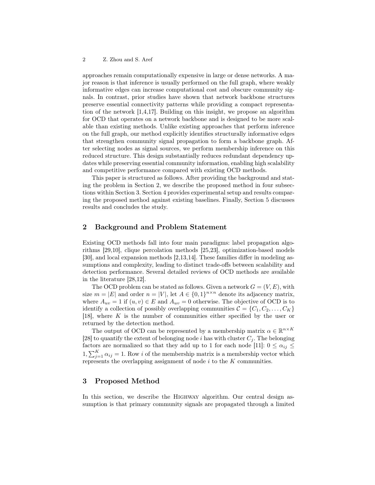
<figcaption class="paper-figure-caption"><b>Fig 1.</b> Low-resolution page preview, page 2</figcaption>
</figure>
<figure class="paper-figure-card">
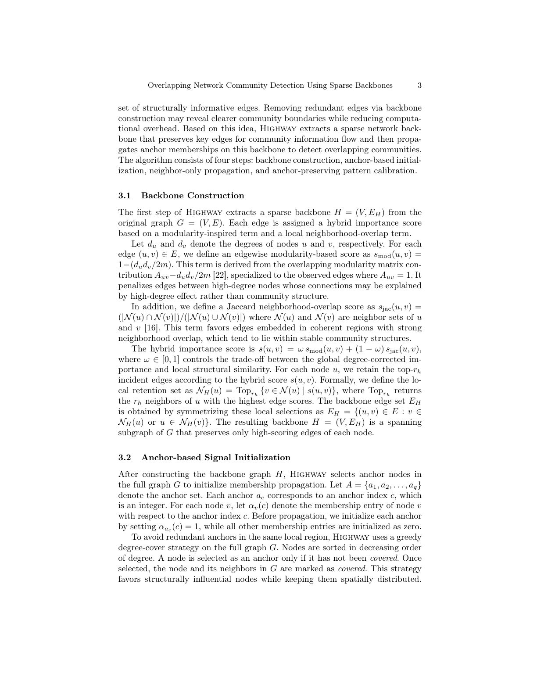
<figcaption class="paper-figure-caption"><b>Fig 2.</b> Low-resolution page preview, page 3</figcaption>
</figure>
<figure class="paper-figure-card">
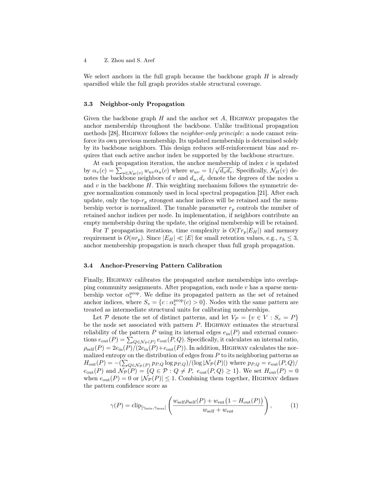
<figcaption class="paper-figure-caption"><b>Fig 3.</b> Low-resolution page preview, page 4</figcaption>
</figure>
<figure class="paper-figure-card">
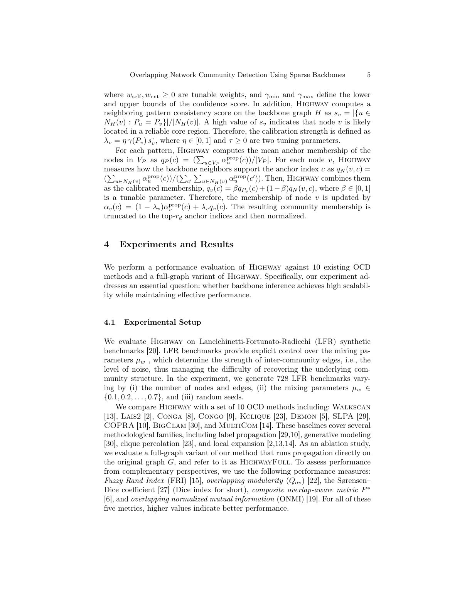
<figcaption class="paper-figure-caption"><b>Fig 4.</b> Low-resolution page preview, page 5</figcaption>
</figure>
<figure class="paper-figure-card">
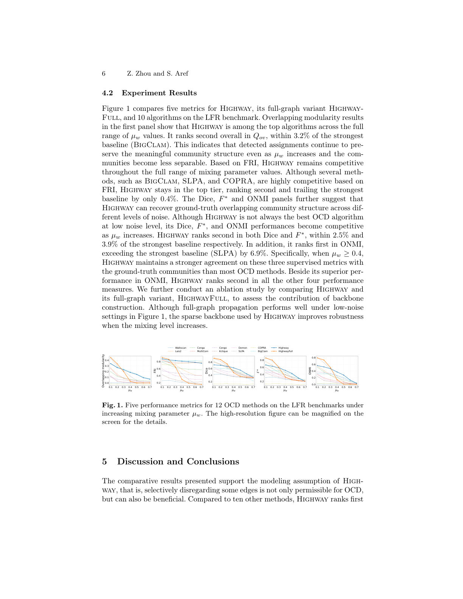
<figcaption class="paper-figure-caption"><b>Fig 5.</b> Low-resolution page preview, page 6</figcaption>
</figure>
</div>

<p><strong>Summary.</strong> This paper introduces Highway, a novel and scalable algorithm for Overlapping Community Detection (OCD) that improves efficiency by utilizing the sparse backbone of an input network. By combining modularity and Jaccard scores to build this backbone, Highway accurately infers overlapping community structures. The method demonstrates superior performance across multiple metrics when tested against numerous benchmark networks.</p>
<p><strong>Why it may be interesting.</strong> While focused on network science rather than quantum physics directly, the underlying mathematical framework of community detection shares conceptual parallels with finding emergent structures or ground states in complex physical systems, which can sometimes be modeled using graph theory techniques relevant to condensed matter analysis.</p>
<details>
<summary>Detailed structure</summary>
<p><strong>Main problem.</strong> The core problem is Overlapping Community Detection (OCD) in complex networks, where nodes can belong to multiple clusters.</p>
<p><strong>Main result.</strong> The proposed Highway algorithm achieves state-of-the-art performance on 728 benchmark networks, ranking first in overlapping normalized mutual information with a significant improvement over existing methods.</p>
<p><strong>Method.</strong> Highway is a scalable OCD algorithm that leverages the sparse backbone of the input network to perform efficient community inference through anchor initialization and neighbor propagation.</p>
<p><strong>Model / system.</strong> The system analyzed is general network data represented by a graph G=(V, E). The method constructs a sparse backbone H using a hybrid edge scoring function combining modularity and Jaccard overlap scores.</p>
<p><strong>Key observables.</strong> Membership matrix (alpha), Pattern confidence score (gamma(P)), Calibration strength (lambda_v), Fuzzy Rand Index (FRI), overlapping modularity (Q_ov), Dice index, F*, and Overlapping Normalized Mutual Information (ONMI).</p>
<p><strong>Important parameters / regimes.</strong> The backbone construction uses a hybrid weight $\omega$ for the edge scoring function. The final membership update involves tuning parameters like $eta$, $\eta$, and $    au$.</p>
<p><strong>Assumptions / limitations.</strong> The method assumes that primary community signals propagate effectively through a limited set of structurally informative edges (the sparse backbone).</p>
<p><strong>Paper structure.</strong> The paper introduces the problem, details the Highway algorithm in stages: Backbone Construction, Anchor-based Signal Initialization, Neighbor-only Propagation, and final Anchor-Preserving Pattern Calibration. It concludes with extensive comparative results on benchmark networks.</p>
</details>
<details>
<summary>Abstract</summary>
<p>Community structures are common in real networks, and extracting them provides valuable insight in applications ranging from drug discovery to market segmentation. Overlapping community detection (OCD) is the task of clustering networked data in which nodes may belong to multiple clusters. Existing OCD algorithms often struggle to achieve a suitable balance between detection quality and scalability. We, therefore, propose Highway, a scalable OCD algorithm that exploits the sparse backbone of the input network to perform efficient community inference. We used 728 Lancichinetti-Fortunato-Radicchi benchmark networks to compare Highway and its ablated version against 10 existing OCD algorithms. Our results, based on five performance measures, demonstrate a competitive performance for Highway. It ranks first in overlapping normalized mutual information with a 6.9% improvement over the strongest baseline. It also ranks second in all the other four performance measures. These comparative results suggest that Highway coupled with its backbone procedure offers a suitable accuracy-efficiency trade-off. The Highway algorithm is open-source and available as part of the CDlib library.</p>
</details>
<p><sub><a href="#top">↑ back to top</a></sub></p>

<p><a id="paper-2607.14803"></a></p>
<h3 id="math1016math-axis-strain-tuning-of-superconductivity-and-symmetric-elastoresistivity-in-csvmath1017mathsbmath1018math"><a href="http://arxiv.org/abs/2607.14803v1">$c$-axis strain tuning of superconductivity and symmetric elastoresistivity in CsV$_3$Sb$_5$</a></h3>
<p><strong>Authors:</strong> Xiaoran Yang, Yutong Li, Chunyi Li, Qi Tang, Jiawen Zhang, Yu Song, Huiqiu Yuan, Xingye Lu<br>
<strong>Type:</strong> experiment · <strong>Category:</strong> strongly correlated electrons · <strong>PDF:</strong> <a href="https://arxiv.org/pdf/2607.14803v1">https://arxiv.org/pdf/2607.14803v1</a><br>
<strong>Analysis basis:</strong> full PDF text, analyzed in chunks
<strong>Topic relevance:</strong> <code>Frenkel-Kontorova</code> <strong>1/5</strong> · <code>analog quantum simulation</code> <strong>1/5</strong></p>
<div class="figure-strip-hint">↔ Scroll figures horizontally</div>
<div class="paper-figures-scroll">
<figure class="paper-figure-card">
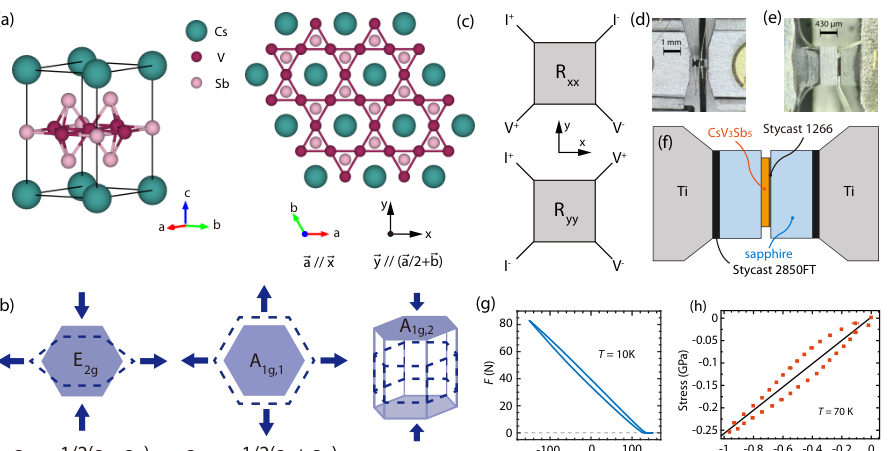
<figcaption class="paper-figure-caption"><b>Fig 1.</b> FIG. 1. Crystal structure, strain symmetries, and experimental configurations for in-plane and c-axis measurements in CsV3Sb5. (a) Crystal structure of CsV3Sb5 and top view of the V–Sb kagome layer, with crystallographic axes indicated. (b) Schematic illustration of the symmetry- resolved strain components in the hexagonal D6h point group: E2g anisotropic in-plane strain εE2g = 1</figcaption>
</figure>
<figure class="paper-figure-card">
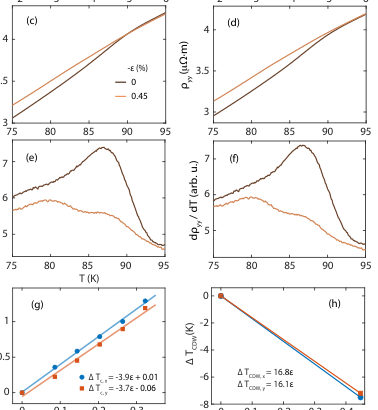
<figcaption class="paper-figure-caption"><b>Fig 2.</b> FIG. 2. c-axis compressive strain tuning of Tc and TCDW in CsV3Sb5. (a,b) Normalized in-plane resistivity ρxx(T)/ρxx(6 K) (a) and ρyy(T)/ρyy(6 K) (b) measured through the superconducting tran- sition under a series of c-axis compressive strains. The legend de- notes the applied compression plotted as −ε, such that larger −ε cor- responds to stronger compression. Dashed lines indicate the crite- rion used to determine ∆Tc. (c,d) Temperature-dependent resistiv- ity ρxx(T) (c) and ρyy(T) (d) in the vicinity of the CDW transition under representative c-axis compressive strains. (e,f) Correspond- ing temperature derivatives dρxx/dT (e) and dρyy/dT (f), from which TCDW is identified by the peak...</figcaption>
</figure>
<figure class="paper-figure-card">

<figcaption class="paper-figure-caption"><b>Fig 3.</b> FIG. 3. Linear strain dependence of the in-plane resistive response under a-axis strain and c-axis compression. (a,b) Fractional resistiv- ity change ∆ρ/ρ measured at selected temperatures (80 K, 90 K, and 96 K) as a function of in-plane uniaxial strain applied along the crys- tallographic a axis (ε ∥a). Panel (a) shows the response of (∆ρ/ρ)xx (current along x ∥a), while panel (b) shows (∆ρ/ρ)yy (current along y ⊥a). (c,d) Corresponding ∆ρ/ρ measured under c-axis compres- sion (ε ∥c), plotted versus −ε such that increasing values denote in- creasing compression. Panel (c) shows (∆ρ/ρ)xx and panel (d) shows (∆ρ/ρ)yy.</figcaption>
</figure>
<figure class="paper-figure-card">
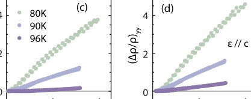
<figcaption class="paper-figure-caption"><b>Fig 4.</b> Figure 3 presents the fractional resistivity changes, ∆ρii/ρii, at representative temperatures (80 K, 90 K, and 96 K) across the CDW transition. The responses are shown for both in- plane uniaxial strain [Figs. 3(a) and 3(b)] and direct c-axis compression [Figs. 3(c) and 3(d)]. In all configurations, the strain-induced resistivity changes remain linear over the ac- cessible strain range, ensuring a robust and well-defined ex- traction of the underlying elastoresistivity coefficients. As noted above, a weakly strained fraction may be present under c-axis compression, which would mainly dilute the absolute magnitude of ∆ρii/ρii, rather than change the sign or temper- ature dependence....</figcaption>
</figure>
<figure class="paper-figure-card">
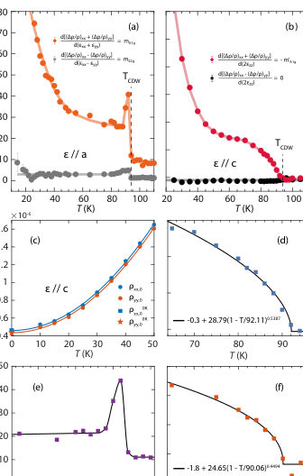
<figcaption class="paper-figure-caption"><b>Fig 5.</b> FIG. 4. Symmetry-resolved elastoresistivity coefficients and isola- tion of the in-plane and out-of-plane cross-coupling coefficients in CsV3Sb5. (a) Temperature dependence of the symmetry-resolved elastoresistivity coefficients extracted from in-plane strain sweeps: the anisotropic channel mE2g (gray symbols) and the effective sym- metric response mA1g (orange symbols). (b) Temperature dependence of the effective symmetric elastoresistivity coefficient under c-axis compression, plotted as −m′ A1g (red symbols), together with the dif- ference channel (black symbols), which remains near zero within un- certainty. Vertical lines mark the CDW transition temperature TCDW. Solid symbols are...</figcaption>
</figure>
</div>

<p><strong>Summary.</strong> This work precisely disentangles the roles of in-plane and out-of-plane lattice strains in $   ext{CsV}_3  ext{Sb}_5$ by combining independent mechanical strain controls. It reveals that $c$-axis compression is the dominant tuning mechanism, strongly enhancing superconductivity while suppressing CDW order. Crucially, it isolates symmetry-specific coupling coefficients, showing a clear link between the CDW order parameter and out-of-plane lattice distortions.</p>
<p><strong>Why it may be interesting.</strong> The ability to decouple and quantify anisotropic coupling mechanisms (like $m_{13}$) in strongly correlated systems under external tuning fields provides general principles for understanding strain effects on quantum phases, which can be relevant to designing artificial lattice potentials in AMO or condensed matter simulations.</p>
<details>
<summary>Detailed structure</summary>
<p><strong>Main problem.</strong> The study aims to independently determine the roles of in-plane ($    ext{A}<em 1g_2="1g,2">{1g,1}$) and out-of-plane ($   ext{A}</em>_5$.}$) symmetric strain channels governing the interplay between Charge-Density-Wave (CDW) order and superconductivity in $    ext{CsV}_3  ext{Sb</p>
<p><strong>Main result.</strong> Out-of-plane lattice control via $c$-axis compression dominates the phase competition, causing a massive linear enhancement of $T_c$ while suppressing $T_{	ext{CDW}}$. Furthermore, the out-of-plane cross-coupling coefficient ($m_{13}$) exhibits an order-parameter-like onset across the CDW transition.</p>
<p><strong>Method.</strong> The researchers combined in-plane uniaxial strain with direct $c$-axis compression using specialized mechanical setups to measure resistivity components and extract symmetry-resolved elastoresistivity coefficients.</p>
<p><strong>Model / system.</strong> The physical system is the kagome metal $   ext{CsV}_3  ext{Sb}_5$, which exhibits intertwined CDW and superconducting states. The analysis models the strain dependence of $T_c$ and $T_{	ext{CDW}}$ as linear functions of applied uniaxial strains ($\epsilon_{xx}$ and $\epsilon_{zz}$).</p>
<p><strong>Key observables.</strong> Superconducting transition temperature ($T_c$), Charge-Density-Wave transition temperature ($T_{	ext{CDW}}$), and symmetry-resolved elastoresistivity coefficients ($m_{11}+m_{12}$ and $m_{13}$).</p>
<p><strong>Important parameters / regimes.</strong> $c$-axis compression efficiency significantly exceeds in-plane strain efficiency; the CDW order parameter coupling exponent $eta \approx 0.5$.</p>
<p><strong>Assumptions / limitations.</strong> The primary assumption is that by independently controlling both in-plane and out-of-plane strains, the intrinsic mixing of contributions found in conventional piezo experiments can be resolved.</p>
<p><strong>Figures summary.</strong> Figures illustrate the crystal structure and strain symmetries; data show linear $\Delta T_c$ vs. strain dependence for both directions, and temperature plots reveal order-parameter-like onsets for extracted pure elastoresistivity coefficients below $T_{	ext{CDW}}$.</p>
<p><strong>Paper structure.</strong> The paper first establishes the physical problem of mixed strain responses in $    ext{CsV}_3  ext{Sb}_5$. It then details the combined experimental methodology using independent uniaxial strain control. The core results demonstrate that out-of-plane lattice control is dominant, followed by a detailed symmetry decomposition of the elastoresistivity coefficients.</p>
</details>
<details>
<summary>Abstract</summary>
<p>The kagome metal CsV$_{3}$Sb$_{5}$ hosts an intriguing interplay between charge-density-wave (CDW) order and superconductivity that is highly sensitive to lattice distortions. However, determining the specific roles of the in-plane ($A_{1g,1}$) and out-of-plane ($A_{1g,2}$) symmetric strain channels has been hindered by their intrinsic mixing in conventional piezo-based experiments. Here, we combine in-plane uniaxial strain with direct $c$-axis compression to independently access and disentangle these symmetry-resolved responses in CsV$_{3}$Sb$_{5}$. We reveal that $c$-axis compression drives a massive, linear enhancement of the superconducting transition temperature ($T_c$) alongside a suppression of $T_{\rm CDW}$. The tuning efficiency of this out-of-plane deformation acts with an opposite sign and far exceeds that of in-plane strain, demonstrating that $c$-axis lattice control dictates the phase competition. Furthermore, by isolating the pure elastoresistivity coefficients, we find that the out-of-plane cross-coupling coefficient ($m_{13}$) is comparable in magnitude but opposite in sign to the in-plane response ($m_{11}+m_{12}$). Unlike the sharply peaked in-plane response, $m_{13}$ exhibits a distinct, order-parameter-like onset across the CDW transition. Our results establish that out-of-plane lattice control plays a dominant role in tuning the intertwined states in CsV$_{3}$Sb$_{5}$ and provide a general pathway for resolving strain-coupled electronic responses in layered quantum materials.</p>
</details>
<p><sub><a href="#top">↑ back to top</a></sub></p>

<p><a id="paper-2607.14231"></a></p>
<h3 id="a-compass-on-the-quantum-state-sphere-the-hopf-ansatz-for-arbitrary-pure-state-optimization"><a href="http://arxiv.org/abs/2607.14231v1">A Compass on the Quantum State Sphere: The Hopf Ansatz for Arbitrary Pure-State Optimization</a></h3>
<p><strong>Authors:</strong> Ruge Lin, Guangxi Li<br>
<strong>Type:</strong> theory · <strong>Category:</strong> quantum information and computing · <strong>PDF:</strong> <a href="https://arxiv.org/pdf/2607.14231v1">https://arxiv.org/pdf/2607.14231v1</a><br>
<strong>Analysis basis:</strong> full PDF text, analyzed in chunks
<strong>Topic relevance:</strong> <code>quantum measurements</code> <strong>1/5</strong></p>
<div class="figure-strip-hint">↔ Scroll figures horizontally</div>
<div class="paper-figures-scroll">
<figure class="paper-figure-card">
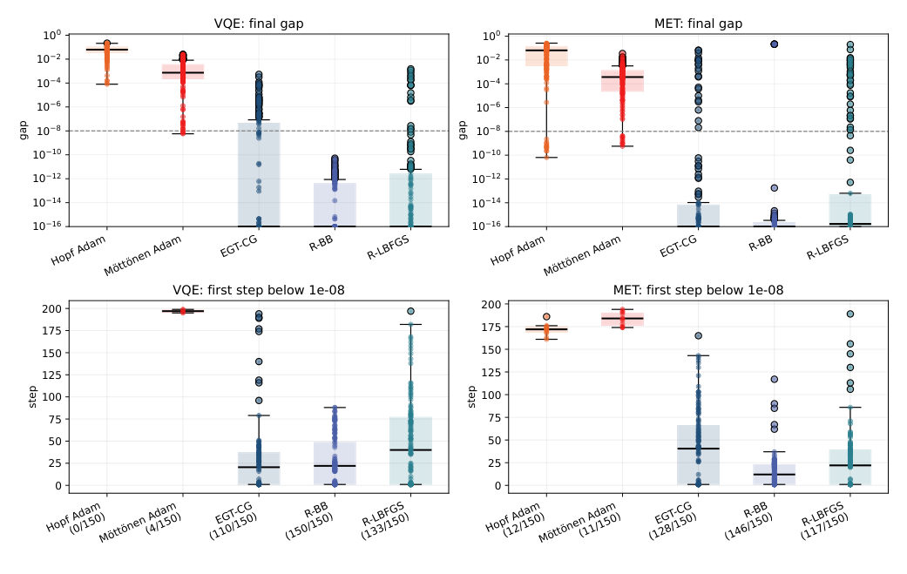
<figcaption class="paper-figure-caption"><b>Fig 1.</b> Figure 1: Aggregate final precision and threshold hitting over all stress tests and system sizes n = 6, . . . , 10. The top row shows final optimality gaps after 200 accepted updates; the gray dashed line marks the 10−8 reference threshold. The bottom row shows the first accepted update at which each crossing trace reaches that threshold; the parenthetical labels report the number crossing within 200 updates out of the total number of traces. In every box plot, the box spans the interquartile range, the horizontal line marks the median, and the whiskers extend to the most extreme values within 1.5 interquartile ranges. Colored circles are the individual task-size-seed traces. Optimizer...</figcaption>
</figure>
<figure class="paper-figure-card">
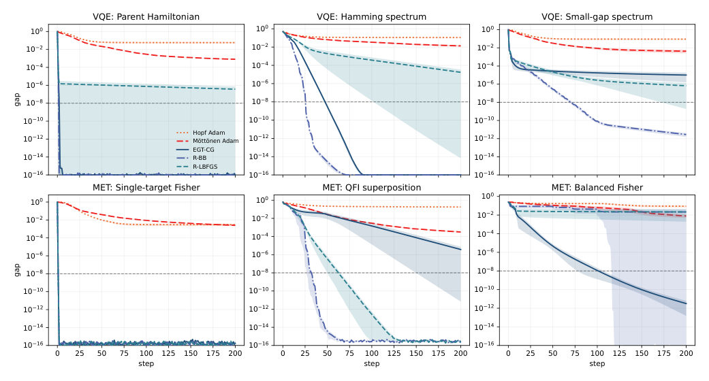
<figcaption class="paper-figure-caption"><b>Fig 2.</b> Figure 2: Per-task convergence at n = 10, with ten deterministic pseudo-random initial-state seeds per task. The top row shows the parent-Hamiltonian, scrambled-Hamming-spectrum, and small-gap-spectrum VQE tasks. The bottom row shows the single-target Fisher, QFI extremal-superposition, and balanced two-target Fisher tasks. Each curve is the mean optimality gap across the ten seeds, and each translucent band is the corresponding standard error of the mean. Optimizer colors match Fig. 1, and the legend’s line styles are used consistently in all six panels. The gray dashed line marks the 10−8</figcaption>
</figure>
<figure class="paper-figure-card">
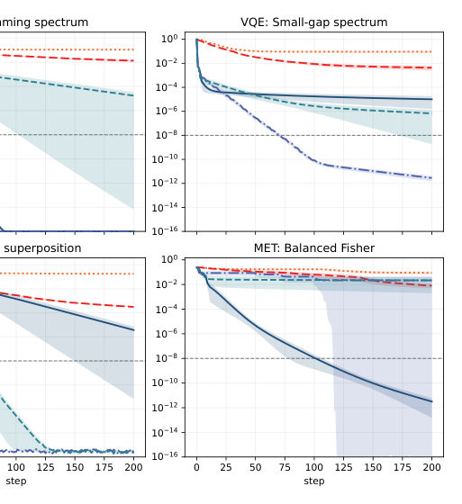
<figcaption class="paper-figure-caption"><b>Fig 3.</b> Figure 2 shows where the aggregate differences arise at n = 10. The parent-Hamiltonian and single-target Fisher objectives are the easiest tasks: most Hopf-geometric traces rapidly reach the target scale. On the Hamming, small-gap, QFI, and balanced Fisher tasks, the mean curves often overlap after the fast initial descent, so the important differences are the slow tails and the traces that fail to cross the 10−8 threshold within 200 accepted iterations. The balanced two-target Fisher objective is the most diagnostic nonlinear test, especially for identi- fying such slow-tail behavior.</figcaption>
</figure>
<figure class="paper-figure-card">
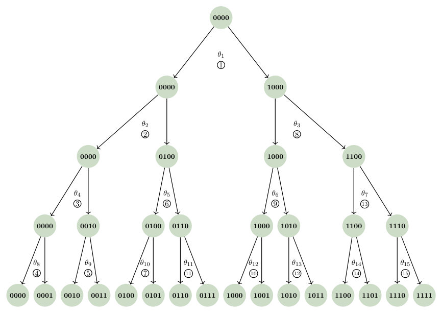
<figcaption class="paper-figure-caption"><b>Fig 4.</b> Figure 3: Binary tree for preparing a 4-qubit state in Hopf coordinates. A bit-0 branch multiplies the amplitude by cos θj, and a bit-1 branch multiplies it by sin θj. The displayed θj labels are the Hopf magnitude parameters associated with internal nodes, while the blue labels θ16, . . . , θ31 are the complex leaf phases. Circled numbers indicate the gate-application order generated by Algorithms 1 and 2. The binary labels inside the nodes are padded path labels identifying the corresponding subtree or leaf, rather than the breadth-first internal-node indices.</figcaption>
</figure>
<figure class="paper-figure-card">
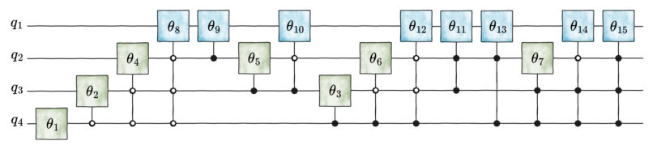
<figcaption class="paper-figure-caption"><b>Fig 5.</b> Figure 4: Four-qubit Hopf ansatz circuit derived from the tree in Fig. 3. The green gates are the magnitude rotations shared by the real-state and complex-state versions of the Hopf ansatz. In the complex ansatz, each final-layer gate θj with 8 ≤j ≤15 is promoted to an RC gate carrying the magnitude angle θj and the two sibling leaf phases listed in Table I. All quantum circuit diagrams in this work were produced using the quantum-circuit-drawio-library [54].</figcaption>
</figure>
</div>

<p><strong>Summary.</strong> This paper introduces the Hopf ansatz, a novel binary-tree circuit parameterization designed to map and optimize arbitrary pure quantum states on the unit sphere. It successfully provides analytic expressions for the metric tensor and demonstrates how to prepare necessary tangent states directly within the circuit structure. This turns state preparation into a fully navigable framework for advanced quantum optimization algorithms.</p>
<p><strong>Why it may be interesting.</strong> This work provides a powerful, geometrically rigorous tool for variational quantum algorithms by transforming state optimization from an abstract manifold problem into a concrete, efficiently measurable circuit decomposition.</p>
<details>
<summary>Detailed structure</summary>
<p><strong>Main problem.</strong> The core problem is developing a systematic method for optimizing arbitrary pure quantum states on the unit sphere in Hilbert space, requiring more than just knowing if a target state is reachable.</p>
<p><strong>Main result.</strong> The Hopf ansatz provides a unified, navigable framework that yields coordinates, local distance metrics, and preparable gradient directions for any pure-state optimization problem.</p>
<p><strong>Method.</strong> The authors introduce the Hopf ansatz, a binary-tree circuit structure parameterized by angles. This structure allows for the explicit calculation of the state's metric tensor components and the preparation of necessary tangent states to compute gradients efficiently.</p>
<p><strong>Model / system.</strong> The system is an arbitrary pure quantum state $|\psi
angle$ in a Hilbert space, which is constrained to the unit sphere ($S^{N-1}$ or $S^{2N-1}$). The optimization process is framed as navigating this geometric manifold using variational quantum algorithms (VQE).</p>
<p><strong>Key observables.</strong> Local distance information derived from the diagonal induced metric; gradient components calculated via measurable expectation values involving tangent states.</p>
<p><strong>Important parameters / regimes.</strong> The parameters are the angles ($    heta$) defining the state preparation circuit, which govern both probability splitting (internal angles) and complex phases (leaf phases).</p>
<p><strong>Assumptions / limitations.</strong> The analysis relies on the existence of a fixed binary-tree gate skeleton and assumes operation within the 'regular set' where certain subtree weights are non-zero.</p>
<p><strong>Figures summary.</strong> Not specified by notes, but the structure implies diagrams illustrating the binary tree circuit for state preparation and subsequent gradient measurement circuits.</p>
<p><strong>Paper structure.</strong> The paper builds from defining the geometric challenge of pure-state optimization to introducing the Hopf ansatz as a solution. It then rigorously derives the diagonal metric tensor components (real and complex cases) and proves that the necessary derivative states can be synthesized using local trigonometric shifts within the same circuit structure.</p>
</details>
<details>
<summary>Abstract</summary>
<p>Optimizing arbitrary quantum state vectors is like navigating the unit sphere in Hilbert space: beyond target reachability, optimization asks for coordinates, local distance information, and measurable directions. We introduce the Hopf ansatz, a binary-tree circuit for arbitrary normalized real and complex state vectors. Internal angles steer probability between subtrees, leaf phases carry the complex degrees of freedom, and the same tree gives state preparation and an explicit inverse map from amplitudes to physical angles. Together these structures act as a compass for the search: the inverse map gives coordinates, the diagonal induced metric gives local distance information, and nonzero coordinate tangents become preparable normalized states.   For Hamiltonian objectives, and for objectives with the same local transition-moment form, each gradient component is a known scale factor times a transition moment between the current state and a tangent state. A branch-state construction expresses these moments through expectation-value measurements, while the tree organizes the compiled gradient settings by magnitude layer and leaf-indexed phase family. Thus the number of distinct compiled gradient-access circuit families grows only logarithmically with Hilbert-space dimension, while the measurement budget required for a chosen precision remains a separate statistical cost. In deterministic real-state benchmarks with exact costs, exact gradients, and known global optima, metric-aware Hopf optimizers reach numerical-precision median gaps, with the clearest baseline gains in smaller VQE mean final gaps and stronger concentration of metrology-inspired traces at numerical precision. The Hopf ansatz turns universal state preparation into a navigable framework for arbitrary pure-state optimization.</p>
</details>
<p><sub><a href="#top">↑ back to top</a></sub></p>

<p><a id="paper-2607.14920"></a></p>
<h3 id="a-three-point-continuous-variable-quantum-macwilliams-identity"><a href="http://arxiv.org/abs/2607.14920v1">A Three-Point Continuous-Variable Quantum MacWilliams Identity</a></h3>
<p><strong>Authors:</strong> Yinzi Xiao<br>
<strong>Type:</strong> theory · <strong>Category:</strong> quantum information and computing · <strong>PDF:</strong> <a href="https://arxiv.org/pdf/2607.14920v1">https://arxiv.org/pdf/2607.14920v1</a><br>
<strong>Analysis basis:</strong> full PDF text, analyzed in chunks
<strong>Topic relevance:</strong> <code>entanglement &amp; information structure</code> <strong>1/5</strong></p>
<div class="figure-strip-hint">↔ Scroll figures horizontally</div>
<div class="paper-figures-scroll">
<figure class="paper-figure-card">
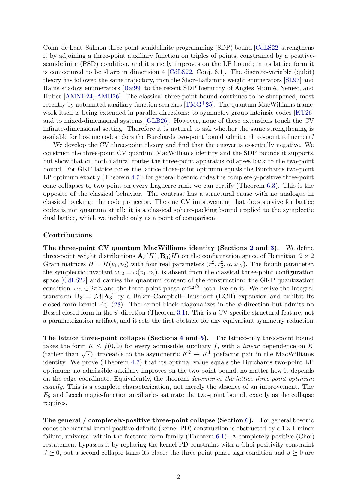
<figcaption class="paper-figure-caption"><b>Fig 1.</b> Low-resolution page preview, page 2</figcaption>
</figure>
<figure class="paper-figure-card">
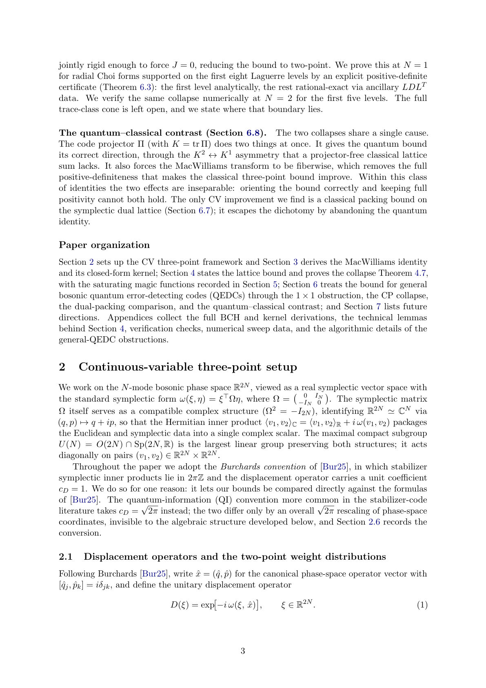
<figcaption class="paper-figure-caption"><b>Fig 2.</b> Low-resolution page preview, page 3</figcaption>
</figure>
<figure class="paper-figure-card">
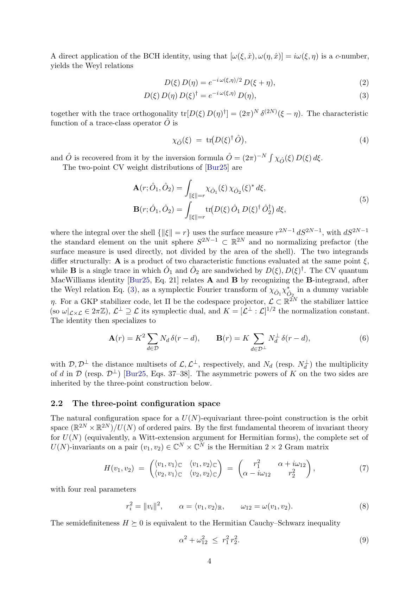
<figcaption class="paper-figure-caption"><b>Fig 3.</b> Low-resolution page preview, page 4</figcaption>
</figure>
<figure class="paper-figure-card">
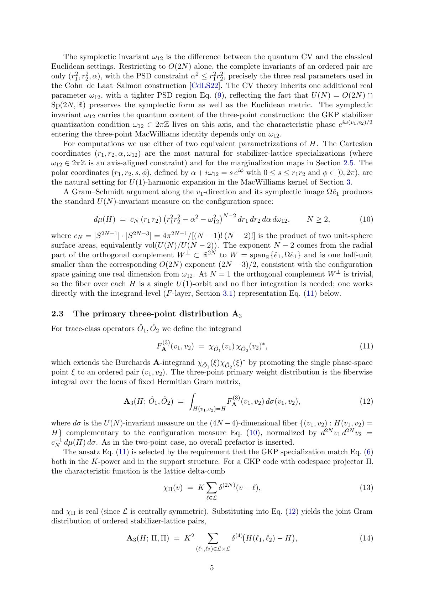
<figcaption class="paper-figure-caption"><b>Fig 4.</b> Low-resolution page preview, page 5</figcaption>
</figure>
<figure class="paper-figure-card">
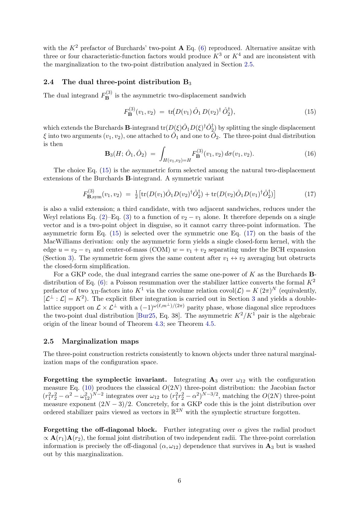
<figcaption class="paper-figure-caption"><b>Fig 5.</b> Low-resolution page preview, page 6</figcaption>
</figure>
</div>

<p><strong>Summary.</strong> This paper develops a three-point continuous-variable quantum MacWilliams identity for bosonic error-correcting codes. It uses advanced techniques involving characteristic functions and SDPs to derive bounds on code dimension. The key finding is that this sophisticated three-point bound collapses back to the established two-point bound for important classes of codes, providing deep structural insight into the limitations of current QEC theory.</p>
<p><strong>Why it may be interesting.</strong> This work provides deep mathematical constraints on quantum error correction codes beyond simple stabilizer assumptions, linking algebraic structures (MacWilliams identities) directly to fundamental physical limitations imposed by positivity.</p>
<details>
<summary>Detailed structure</summary>
<p><strong>Main problem.</strong> The authors construct a three-point continuous-variable (CV) quantum MacWilliams identity to derive tighter semidefinite-programming (SDP) bounds on the dimension of CV quantum error-correcting codes.</p>
<p><strong>Main result.</strong> They prove that for GKP lattice codes, the three-point bound does not improve upon the existing two-point linear-programming optimum; furthermore, general bosonic code analysis shows a collapse to the two-point bound due to structural constraints imposed by the code projector.</p>
<p><strong>Method.</strong> The work involves constructing and analyzing complex integral kernels (the three-point identity) using characteristic functions derived from displacement operators, followed by rigorous SDP bounding techniques and positive-definiteness proofs in exact arithmetic.</p>
<p><strong>Model / system.</strong> The system studied is bosonic quantum error-correcting codes, particularly those based on the Gottesman–Kitaev–Preskill (GKP) construction within an infinite-dimensional harmonic oscillator Hilbert space. The analysis focuses on weight distributions over the configuration space of Gram matrices.</p>
<p><strong>Key observables.</strong> Code dimension ($K$), protection distance ($d$), and the minimum eigenvalue ($\lambda_{\min}$) of positive combination matrices $P(\mu)$ used as SDP certificates.</p>
<p><strong>Important parameters / regimes.</strong> The lattice structure (GKP), the number of modes ($N$), and the truncation level ($M$) are key parameters governing the bounds and analysis complexity.</p>
<p><strong>Assumptions / limitations.</strong> The analysis often relies on an envelope-cut approximation ($\sigma > 0$) for physical realization, and certain structural assumptions about the form of the weight distributions ($A_3$ and $B_3$).</p>
<p><strong>Figures summary.</strong> Figures/tables summarize calculated values for admissibility distances and ratios comparing different bounding techniques (e.g., $
ho_N = K_{ne}/K_{Lev}$), confirming theoretical bounds.</p>
<p><strong>Paper structure.</strong> The paper builds from the construction of the three-point identity kernel, through deriving its relationship to known two-point identities via BCH expansion, and culminates in proving the non-improvement of this bound for specific code types using SDP techniques.</p>
</details>
<details>
<summary>Abstract</summary>
<p>We construct the three-point continuous-variable (CV) quantum MacWilliams identity, extending the two-point framework of Burchards, and give its closed-form integral kernel. Its configuration space carries a symplectic invariant with no classical counterpart, which encodes the GKP quantization condition and a three-point sign phase. Using the identity, we derive the semidefinite-programming bounds it supports on the dimension of CV quantum error-correcting codes, and we prove, in two collapse theorems, that the three-point apparatus does not improve on the two-point bound. For GKP lattice codes the three-point optimum equals the Burchards two-point linear-programming optimum identically. This is an exact determination of the lattice three-point optimum, so the $E_8$ and Leech magic functions saturate it rather than beat it. For general bosonic codes a completely-positive reformulation bypasses the positivity obstruction that rules out the natural factored-form constructions; the phase-sign condition together with Choi positivity then force the three-point term to vanish. We certify this collapse for radial Choi forms on the first eight Laguerre levels at one mode, and leave the full trace-class cone open. Both collapses have a single cause with no classical analogue, the code projector: it orients the bound correctly but also removes the full positivity that powers the classical three-point improvement.</p>
</details>
<p><sub><a href="#top">↑ back to top</a></sub></p>

<p><a id="paper-2607.15070"></a></p>
<h3 id="casimir-effect-for-a-massive-scalar-field-confined-between-parallel-plates-with-a-spatially-varying-effective-mass"><a href="http://arxiv.org/abs/2607.15070v1">Casimir effect for a massive scalar field confined between parallel plates with a spatially varying effective mass</a></h3>
<p><strong>Authors:</strong> R. L. Araújo Xavier, M. H. B. Chaves, E. R. Bezerra de Mello, Herondy Mota<br>
<strong>Type:</strong> theory · <strong>Category:</strong> other · <strong>PDF:</strong> <a href="https://arxiv.org/pdf/2607.15070v1">https://arxiv.org/pdf/2607.15070v1</a><br>
<strong>Analysis basis:</strong> full PDF text, analyzed in chunks
<strong>Topic relevance:</strong> <code>Keldysh / 2PI / non-Gaussian methods</code> <strong>1/5</strong></p>
<div class="figure-strip-hint">↔ Scroll figures horizontally</div>
<div class="paper-figures-scroll">
<figure class="paper-figure-card">
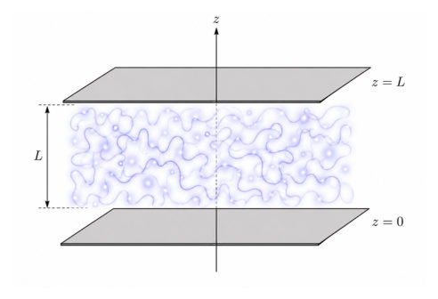
<figcaption class="paper-figure-caption"><b>Fig 1.</b> Figure 1. Schematic illustration of two perfectly reflecting parallel plates of area A, separated by a distance L.</figcaption>
</figure>
<figure class="paper-figure-card">
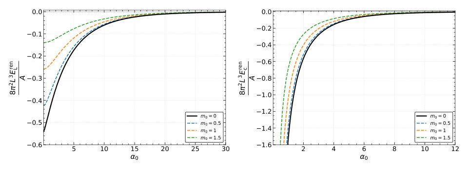
<figcaption class="paper-figure-caption"><b>Fig 2.</b> Figure 2. Renormalized vacuum energy contributions as functions of the dimensionless parameter α0 for several values of the dimensionless mass parameter m0. The left panel displays the contribution Eren L , while the right panel displays the contribution Eren c . In both panels, the solid black curve corresponds to the massless case, m0 = 0.</figcaption>
</figure>
<figure class="paper-figure-card">
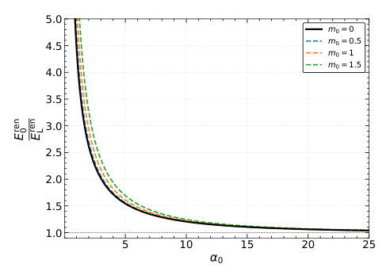
<figcaption class="paper-figure-caption"><b>Fig 3.</b> Figure 3. Ratio between the total renormalized vacuum energy, Eren 0 , and the contribution, Eren L , as a function of the dimensionless parameter α0 for several values of the dimensionless mass parameter m0. The solid black curve corresponds to the massless case, m0 = 0. The horizontal dotted line indicates the value unity, for which the additional contribution Eren c vanishes.</figcaption>
</figure>
</div>

<p><strong>Summary.</strong> This paper calculates the renormalized vacuum energy (Casimir effect) for a massive scalar field confined between plates with a spatially varying effective mass. Using zeta-function regularization, the authors show the total energy splits into two parts: one standard Landau-like contribution and an additional term from the mass variation. The results confirm that while both terms are suppressed in strong coupling, the system's physics is largely governed by the standard boundary effect unless near a singular limit.</p>
<p><strong>Why it may be interesting.</strong> This work provides an exactly solvable framework for analyzing Casimir effects in inhomogeneous relativistic media, which is relevant for understanding boundary conditions and vacuum energy renormalization in complex quantum field theories.</p>
<details>
<summary>Detailed structure</summary>
<p><strong>Main problem.</strong> The study investigates the Casimir effect for a massive scalar field confined between parallel plates when the effective mass term varies spatially.</p>
<p><strong>Main result.</strong> The renormalized vacuum energy separates into two contributions: a Landau-like sector and an additional term from mass variation. For large coupling, both are exponentially suppressed, showing the Landau-like part dominates except near singular limits.</p>
<p><strong>Method.</strong> The authors solve the Klein-Gordon equation using separation of variables, derive the normal mode spectrum, and calculate the vacuum energy via generalized zeta-function regularization and renormalization.</p>
<p><strong>Model / system.</strong> The system is a massive real scalar field confined between two parallel plates (separated by L), governed by a Klein-Gordon equation incorporating a position-dependent effective mass term ($m_{	ext{eff}}^2 = m^2 + \alpha^2
ho^2$).</p>
<p><strong>Key observables.</strong> Renormalized vacuum energy per unit area ($E_{	ext{ren}}^0$), the Landau-like contribution ($E_{	ext{ren}}^L$), and the additional mass-induced contribution ($E_{	ext{ren}}^c$).</p>
<p><strong>Important parameters / regimes.</strong> Plate separation $L$, coupling constant $\alpha$ (related to magnetic field strength), scalar mass $m$, and the dimensionless parameter $\alpha_0 = \alpha L^2$.</p>
<p><strong>Assumptions / limitations.</strong> The analysis relies on generalized zeta-function regularization for renormalization, and the results are noted to be singular in the limit where the additional term's validity breaks down ($\alpha 	o 0$).</p>
<p><strong>Figures summary.</strong> Figure 2 shows both renormalized energy contributions ($E_{	ext{ren}}^L$ and $E_{	ext{ren}}^c$) exhibit exponential suppression for large $\alpha_0$. Figure 3 illustrates the ratio of total to Landau-like energy, showing it approaches unity for large $\alpha_0$.</p>
<p><strong>Paper structure.</strong> The paper first establishes the solvable model by solving the Klein-Gordon equation to find the quantized spectrum. It then calculates the vacuum energy using zeta-regularization, separating the result into two components based on the mass variation. Finally, it performs asymptotic analysis in different coupling regimes ($\alpha_0 \gg 1$ vs $\alpha_0 \ll 1$) to analyze the physical implications.</p>
</details>
<details>
<summary>Abstract</summary>
<p>We investigate the Casimir effect for a massive real scalar field confined between two perfectly reflecting parallel plates in the presence of a position-dependent effective mass, a mechanism for coupling a scalar background to a scalar field. Exact normal modes are obtained by solving the corresponding Klein-Gordon equation, leading to a transverse energy spectrum that exhibits a characteristic Landau-like structure despite the absence of an external magnetic field. Upon quantization of the field, the vacuum energy is evaluated by means of generalized zeta-function regularization together with an appropriate renormalization procedure. The renormalized vacuum energy naturally separates into a Landau-like contribution and an additional term induced by the spatial dependence of the effective mass. We show analytically and numerically that both contributions are exponentially suppressed in the strong-coupling regime. In the opposite limit, the Landau-like contribution smoothly reproduces the standard vacuum energy for a massive scalar field confined between parallel plates, whereas the additional contribution becomes singular owing to the restricted domain of validity of the exact spectrum. Except in the vicinity of this singular limit, the vacuum energy is shown to be dominated by the Landau-like sector. Our results establish a direct connection between position-dependent effective masses and boundary-induced quantum vacuum phenomena, providing a new exactly solvable framework for the investigation of Casimir effects in spatially inhomogeneous relativistic systems.</p>
</details>
<p><sub><a href="#top">↑ back to top</a></sub></p>

<p><a id="paper-2607.14629"></a></p>
<h3 id="emergence-and-recovery-of-logical-kochen-specker-contextuality-via-hamilton-extension"><a href="http://arxiv.org/abs/2607.14629v1">Emergence and Recovery of (logical) Kochen-Specker Contextuality via Hamilton Extension</a></h3>
<p><strong>Authors:</strong> Jayashree Karmakar, Biswadeep Chatterjee, Rafiuddin Gazi, Anushko Chattopadhyay, Ananya Chakraborty, Snehasish Roy Chowdhury, Amit Mukherjee, Manik Banik<br>
<strong>Type:</strong> theory · <strong>Category:</strong> other · <strong>PDF:</strong> <a href="https://arxiv.org/pdf/2607.14629v1">https://arxiv.org/pdf/2607.14629v1</a><br>
<strong>Analysis basis:</strong> full PDF text, analyzed in chunks
<strong>Topic relevance:</strong> <code>quantum measurements</code> <strong>1/5</strong></p>
<div class="figure-strip-hint">↔ Scroll figures horizontally</div>
<div class="paper-figures-scroll">
<figure class="paper-figure-card">
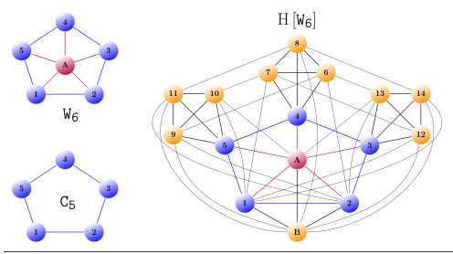
<figcaption class="paper-figure-caption"><b>Fig 1.</b> Figure 1. (Color online) Illustration of apex augmentation and Hamilton extension. The cycle graph C5 (bottom left) admits an orthogonal representation in R3. Adding an apex vertex adjacent to all vertices of C5 yields the wheel graph W6 (top left), which admits an orthogonal representation in R4. The Hamilton extension H[W6] is shown on the right. Each parent vertex generates a Hamilton context, while additional edges give rise to emergent contexts, e.g. {⃗vB,⃗v2,⃗v9,⃗v11}.</figcaption>
</figure>
<figure class="paper-figure-card">
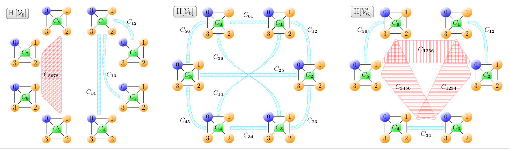
<figcaption class="paper-figure-caption"><b>Fig 2.</b> Figure 2. (Color online) Hamilton extensions generating logical KS contextuality. Left: the extension H[V8] of Theorem 1, yielding a new 32-vector logical KS set in R4. Middle: the extension H[V6] of Theorem 2, which coincides with the Peres-24 [28]. Green, cyan, and red indicate Hamilton contexts, emergent contexts of Type (2-2), and emergent contexts of Type (1-1-1-1), respectively. The set P24 contains as subsets the KS constructions K20 [32] and C18 [33]. Right: 24-vector KS set H [V′ 6]. It contains 12 Type (1-1-1-1) and 6 Type (2-2) emergent contexts and structurally different than Peres-24 construction which contains 18 Type (2-2) emergent contexts; additional structural relations...</figcaption>
</figure>
<figure class="paper-figure-card">
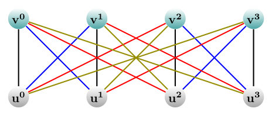
<figcaption class="paper-figure-caption"><b>Fig 3.</b> Figure 3. (Color online) Graphical representation of the inner-product relations between the elements of H[u] and H[v] for u, v ∈RP3. Each edge color labels a distinct inner-product value; edges sharing the same color represent equal inner products.</figcaption>
</figure>
<figure class="paper-figure-card">
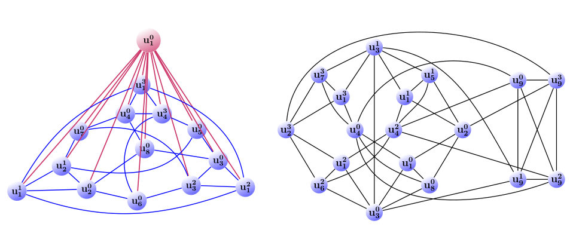
<figcaption class="paper-figure-caption"><b>Fig 4.</b> Figure 4. (Color online) Left: Orthogonality graph of the set YO14. The red vertex (top) is the apex vertex. The graph obtained by removing the apex admits an orthogonal representation in R3, while the full graph admits one only in R4. Right: Orthogonality graph of the set CN18. For both graphs, the classical chromatic number exceeds the corresponding quantum chromatic number [41, 47].</figcaption>
</figure>
</div>

<p><strong>Summary.</strong> This paper introduces the Hamilton extension as a method to systematically generate and recover logical Kochen-Specker contextuality in quantum systems. By analyzing how this construction transforms vector sets, the authors establish that six vectors constitute the smallest set capable of generating a contradiction with noncontextual hidden variables. This offers a new structural route for understanding fundamental limitations on quantum theories.</p>
<p><strong>Why it may be interesting.</strong> The work provides a systematic, constructive framework to engineer quantum nonclassicality using algebraic structures, which is highly relevant for theoretical understanding of contextuality beyond standard Bell tests.</p>
<details>
<summary>Detailed structure</summary>
<p><strong>Main problem.</strong> The research investigates how logical Kochen-Specker (KS) contextuality, a hallmark of quantum mechanics, can emerge from mathematically structured vector sets rather than just being observed in specific configurations.</p>
<p><strong>Main result.</strong> A constructive procedure called the Hamilton extension is shown to generate logical KS contradictions when applied to six or more parent vectors, establishing six as the minimum size required for this emergence.</p>
<p><strong>Method.</strong> The authors employ the Hamilton extension, a construction based on quaternion algebra, to augment vector sets and analyze the resulting orthogonality graphs using graph coloring arguments related to KS colorings.</p>
<p><strong>Model / system.</strong> The model involves quantum measurements represented by vector sets in $\mathbb{R}^4$ or $\mathbb{C}^d$, analyzed through their associated orthogonality graphs. The core mathematical tool is the Hamilton extension, $H[V]$.</p>
<p><strong>Key observables.</strong> Logical Kochen-Specker contextuality (non-colorability of the derived graph structure) and the existence/structure of emergent measurement contexts.</p>
<p><strong>Important parameters / regimes.</strong> The minimum parent set cardinality required to generate contradiction is six vectors. The analysis distinguishes between five-vector sets (always colorable) and six-vector sets (can be uncolorable).</p>
<p><strong>Assumptions / limitations.</strong> The proof for the threshold relies on exhaustive case analysis of emergent contexts generated by five Hamilton-distinct projectors, showing they are always KS-colorable.</p>
<p><strong>Figures summary.</strong> Figures illustrate apex augmentation effects and the structure of Hamiltonian extensions ($H[V]$), detailing how parent vectors generate 'Hamilton contexts' and additional edges create 'emergent contexts.'</p>
<p><strong>Paper structure.</strong> The paper progresses by first defining the Hamilton extension, then demonstrating its ability to recover contextuality lost via apex augmentation. It establishes a sharp threshold theorem regarding the minimum size of the parent set required for contradiction (six vectors). Finally, it provides detailed proofs showing that five-vector sets are always colorable while specific six-vector sets yield contradictions.</p>
</details>
<details>
<summary>Abstract</summary>
<p>Logical Kochen-Specker (KS) contextuality is widely regarded as an intrinsic property of specially constructed measurement configurations. We show instead that it can emerge from KS-colorable vector sets through a constructive procedure we call the Hamilton extension. Defined for four-dimensional vector sets, the Hamilton extension associates each real vector with a measurement context while inducing additional measurement contexts among Hamilton-extended children of distinct parent vectors. These emergent contexts fundamentally alter the compatibility structure, transforming KS-colorable configurations into KS-uncolorable ones and recovering logical contextuality lost under apex-vertex augmentation. We establish a sharp and optimal threshold -- the Hamilton extension of every five-vector parent set remains KS-colorable, whereas suitably chosen six-vector parent sets already generate logical KS contradictions. Thus, six vectors constitute the smallest parent set capable of generating KS contradiction through this mechanism. Our results reveal a new structural route to contextuality, provide a systematic framework for constructing compact KS sets, and have implications for contextuality-based quantum information protocols and graph-theoretic approaches to nonclassicality.</p>
</details>
<p><sub><a href="#top">↑ back to top</a></sub></p>

<p><a id="paper-2607.15060"></a></p>
<h3 id="learning-the-fermion-sign-structure-in-path-integral-monte-carlo"><a href="http://arxiv.org/abs/2607.15060v1">Learning the Fermion sign structure in path-integral Monte Carlo</a></h3>
<p><strong>Authors:</strong> Jarvist Moore Frost<br>
<strong>Type:</strong> theory · <strong>Category:</strong> statistical mechanics · <strong>PDF:</strong> <a href="https://arxiv.org/pdf/2607.15060v1">https://arxiv.org/pdf/2607.15060v1</a><br>
<strong>Analysis basis:</strong> full PDF text, analyzed in chunks
<strong>Topic relevance:</strong> <code>methods for driven-dissipative</code> <strong>1/5</strong></p>
<div class="figure-strip-hint">↔ Scroll figures horizontally</div>
<div class="paper-figures-scroll">
<figure class="paper-figure-card">
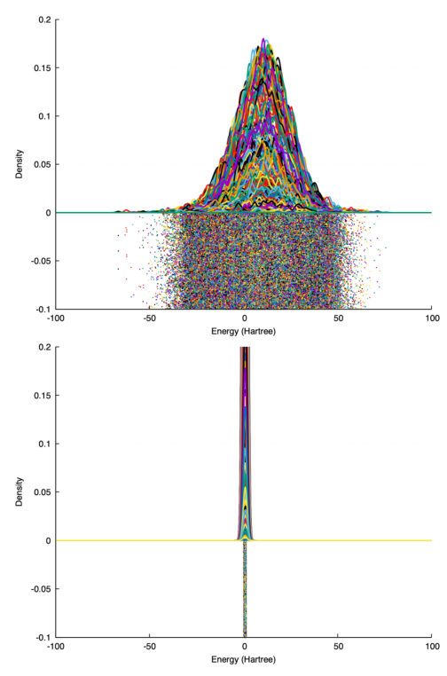
<figcaption class="paper-figure-caption"><b>Fig 1.</b> FIG. 1: Up to 1000 energy samples taken from each permutation-family in an N = 19 spin-polarised UEG simulation, with the Yakub-Ronchi potential and Kelbg smoothing. Tempearature in both figs is ‘low’ (Θ = 0.125). Top is high-density rs = 1.0, bottom is low-density rs = 10.0. The higher density clearly forces much larger variance in the energy. On the bottom is a ‘rug’ plot with the different sectors different colours, and the datapoints jittered (offset randomly in the y-axis) for visibility. On the upper, with the same colour, are kernel density estimators over the same data with a bandwidth of 1.0 (Hartree). Typically the low ranked cycles (fewer permutations) seem to have a smaller...</figcaption>
</figure>
<figure class="paper-figure-card">
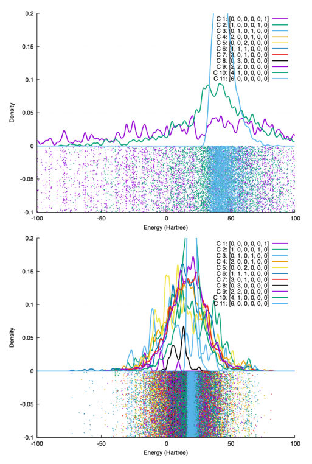
<figcaption class="paper-figure-caption"><b>Fig 2.</b> FIG. 2: Up to 1000 energy samples from each permutation-family in an N = 6 2D harmonic trap at higher temperature β = 0.3 (top) and lower temperature β = 1.0 (bottom). The 11 permutation-families are explicitly labelled with their permutation vector. It is very noticeable that in this system the energies are not symmetrically distributed around a mean nor Gaussian. Particularly, the trivial 6 × 1-mer permutation cycle (C : 11) is highly skewed, and some degree of banding structure is visible in the larger permutations.</figcaption>
</figure>
</div>

<p><strong>Summary.</strong> This paper tackles the notorious Fermion sign problem in PIMC by reframing the calculation as a statistical inference task. It develops sophisticated machine learning models, such as LSTMs, trained on permutation families to learn the underlying sign structure. This approach allows for stable and accurate energy extraction even in strongly correlated regimes where traditional Monte Carlo methods fail.</p>
<p><strong>Why it may be interesting.</strong> This work provides advanced computational tools for simulating interacting quantum many-body systems where sign problems are prohibitive, offering insights into the limitations of current numerical methods in condensed matter theory.</p>
<details>
<summary>Detailed structure</summary>
<p><strong>Main problem.</strong> The primary challenge is overcoming the Fermion sign problem encountered when calculating fermionic observables using path-integral Monte Carlo (PIMC) simulations.</p>
<p><strong>Main result.</strong> The proposed statistical inference framework successfully extracts stable energy estimates in regimes where direct ratio estimation fails due to severe sign fluctuations, demonstrating robustness across benchmark systems.</p>
<p><strong>Method.</strong> The authors recast the calculation as a statistical inference problem, training machine learning models (like LSTM networks) on permutation families derived from Monte Carlo samples, guided by physical priors.</p>
<p><strong>Model / system.</strong> The work applies to fermionic systems simulated via PIMC, focusing on modeling the sign structure associated with exchange permutations within conjugacy classes ('permutation-families').</p>
<p><strong>Key observables.</strong> Fermionic energy ($\langle \hat{E} 
angle_F$), average sign ($\langle \sigma 
angle_B$), and cycle-count vectors $\mathbf{C}$ characterizing permutation families.</p>
<p><strong>Important parameters / regimes.</strong> System parameters include particle number ($N$), density regimes (low/high), temperature proxies, and simulation steps (e.g., $10^6$ to $300 	imes 10^6$).</p>
<p><strong>Assumptions / limitations.</strong> The methodology relies on imposing physical understanding as inductive priors within a Bayesian framework, treating the problem as an inference task rather than a direct ratio calculation.</p>
<p><strong>Figures summary.</strong> Tables present numerical results for energy and sign estimates across varying simulation steps and system parameters ($N=7$ vs $N=33$), comparing different model fits (Linear, LSTM) against raw estimators.</p>
<p><strong>Paper structure.</strong> The paper progresses from identifying the failure of direct ratio estimation to developing a statistical inference framework based on permutation families. It details specific modeling techniques (MaxEnt, MAP, LSTM) and validates them through applications to electron gas models.</p>
</details>
<details>
<summary>Abstract</summary>
<p>Starting from a \emph{probabilistic numerics} approach to the Fermion sign problem in path integral Monte Carlo, we recast the arithmetic calculation of a Fermionic observable as a statistical inference problem. We develop approaches that learn the behaviour of Fermion exchange cycles binned by the conjugacy class of the permutation group (which we term `permutation family'). This extends the work of DuBois, Brown and Alder\cite{dubois2017overcoming} to inhomogeneous and more complex systems. Monte Carlo samples are used to train models for both the probability of a permutation family and the energy of this set of exchange permutations. The overall Fermionic energy is then directly inferred from these models, without using a direct ratio estimator on the Monte Carlo samples.   By imposing physical understanding as inductive priors, we produce accurate and useful fits that remain robust even in regimes with severe sign problems. We generalise the linear (ideal-gas style) models of DuBois et al. with Bayesian priors that enforce the intuitive models of Feynman\cite{Feynman1953A} at their asymptotic limits. These linear models serve as the baseline for a Long Short-Term Memory (LSTM) neural network, which is tasked with learning only the residual many-body \emph{correlations} on top of the physical model. We develop active important sampling methods driven by these models, which direct the Monte Carlo chains toward undersampled permutation regions, to efficiently reduce the variance in the observable.   We apply this framework to small experiments on benchmark systems: the spin-polarised uniform electron gas, and electrons in a 2D harmonic confining potential. In both cases we demonstrate that this inference-based framework can extract stable energies in regimes where direct Monte Carlo sampling fails due to the sign problem.</p>
</details>
<p><sub><a href="#top">↑ back to top</a></sub></p>

<p><a id="paper-2607.14827"></a></p>
<h3 id="sevennet-polar-for-multitask-prediction-of-energy-forces-stress-and-born-effective-charges-development-and-application-to-zromath1095math-limath1096mathpomath1097math-and-perovskites"><a href="http://arxiv.org/abs/2607.14827v1">SevenNet-Polar for MultiTask Prediction of Energy, Forces, Stress, and Born Effective Charges: Development and Application to ZrO$_2$, Li$_3$PO$_4$, and Perovskites</a></h3>
<p><strong>Authors:</strong> Anh Khoa Augustin Lu, Shungo Arai, Yutack Park, Seungwu Han, Tsuyoshi Miyazaki, Satoshi Watanabe<br>
<strong>Type:</strong> theory · <strong>Category:</strong> disordered systems and neural networks · <strong>PDF:</strong> <a href="https://arxiv.org/pdf/2607.14827v1">https://arxiv.org/pdf/2607.14827v1</a><br>
<strong>Analysis basis:</strong> full PDF text, analyzed in chunks
<strong>Topic relevance:</strong> <code>methods for driven-dissipative</code> <strong>1/5</strong></p>
<div class="figure-strip-hint">↔ Scroll figures horizontally</div>
<div class="paper-figures-scroll">
<figure class="paper-figure-card">
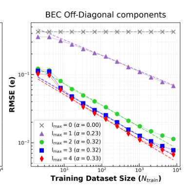
<figcaption class="paper-figure-caption"><b>Fig 1.</b> Fig. 1 Power-law scaling of SevenNet-PS models on BEC diagonal (left) and off-diagonal (right) component prediction errors on a test set for lmax ranging from 0 to 4. The scaling exponent α is derived from fits performed between Ntrain ∈[64, 512].</figcaption>
</figure>
<figure class="paper-figure-card">
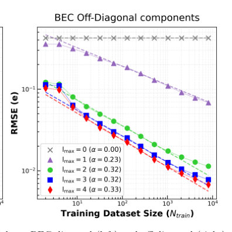
<figcaption class="paper-figure-caption"><b>Fig 2.</b> Figure 2 presents the results for the SevenNet-PS-L (SevenNet-Polar Specialized Large)</figcaption>
</figure>
<figure class="paper-figure-card">
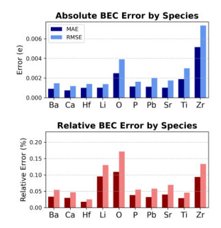
<figcaption class="paper-figure-caption"><b>Fig 3.</b> Fig. 2 Evaluation of the accuracy of SevenNet-PS-M on the combined multi-material test set (ZrO2, Li3PO4, and perovskite). (left) Parity plots comparing BEC tensor components predicted by SevenNet- Polar and DFPT data. (right) Distribution of prediction errors for each of the ten chemical species.</figcaption>
</figure>
<figure class="paper-figure-card">
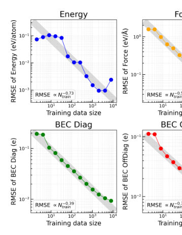
<figcaption class="paper-figure-caption"><b>Fig 4.</b> Fig. 3 Scaling behavior of SevenNet-PM-M on the ZrO2 data set. Root-mean-square errors (RMSE) for energy, forces, stress, and Born effective charge (BEC) components, alongside the total loss, are plotted against the training data set size (Ntrain) on a log-log scale. The thick gray bands represent power-law fits (RMSE ∝N−α train) calculated for the intermediate data regime (64 ≤Ntrain ≤512). The extracted scaling exponents (α) are provided in the insets.</figcaption>
</figure>
<figure class="paper-figure-card">
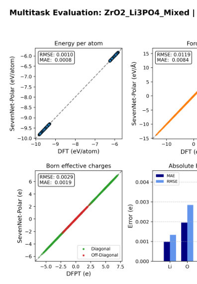
<figcaption class="paper-figure-caption"><b>Fig 5.</b> Fig. 4 Parity plots for total energy, forces, stress tensor and BEC tensor for SevenNet-PM-L. This model has been trained on the ZrO2 and Li3PO4 data sets.</figcaption>
</figure>
</div>

<p><strong>Summary.</strong> This paper introduces SevenNet-Polar, an equivariant graph neural network designed for fast and accurate multi-task prediction of key material properties, including the Born effective charge (BEC). By training on diverse materials under extreme conditions, it achieves high accuracy while maintaining computational efficiency for simulating large systems with applied electric fields. This makes advanced, charge-aware molecular dynamics simulations significantly more accessible.</p>
<p><strong>Why it may be interesting.</strong> While focused on solid-state physics potentials, the use of advanced equivariant GNNs to model complex tensor properties like BEC bridges ML techniques with fundamental quantum mechanical response functions relevant for understanding material polarization in external fields.</p>
<details>
<summary>Detailed structure</summary>
<p><strong>Main problem.</strong> The primary challenge is developing computationally efficient methods for accurately predicting the Born effective charge (BEC) tensor, which is essential for simulating materials under external electric fields.</p>
<p><strong>Main result.</strong> The proposed SevenNet-Polar framework achieves state-of-the-art accuracy across multiple properties (Energy, Forces, Stress, BEC), enabling large-scale simulations up to 1.5 million atoms on supercomputers.</p>
<p><strong>Method.</strong> The authors developed an equivariant graph neural network architecture, SevenNet-Polar, which is trained in a multi-task setting to predict several material properties simultaneously.</p>
<p><strong>Model / system.</strong> The model is applied to crystalline materials like $    ext{ZrO}_2$, $  ext{Li}_3   ext{PO}_4$, and perovskites. It handles complex structural environments such as high temperatures, defects, Nudged Elastic Band (NEB) trajectories, and grain boundaries.</p>
<p><strong>Key observables.</strong> Energy (meV/atom), Forces ($   ext{meV}/^\circ ext{\AA}$), Stress ($    ext{GPa}$), and the Born Effective Charge (BEC) tensor components ($e$).</p>
<p><strong>Important parameters / regimes.</strong> The model's performance is analyzed using power-law scaling exponents ($\alpha$) related to training data size, and hyperparameters like maximum spherical harmonic order ($l_{\max}$).</p>
<p><strong>Assumptions / limitations.</strong> It is assumed that the network can generalize robustly to structural environments not present in the training set. The loss function requires careful tuning due to differing variance scales between properties.</p>
<p><strong>Figures summary.</strong> Figures illustrate power-law scaling of errors for BEC components versus training size, and show predicted tensor values along NEB trajectories or grain boundaries compared to DFT results.</p>
<p><strong>Paper structure.</strong> The paper introduces the SevenNet-Polar framework, details its multi-task learning capabilities (Energy, Force, Stress, BEC), presents quantitative performance benchmarks across various materials and conditions, analyzes data scaling laws, and discusses computational scalability via FlashTP integration.</p>
</details>
<details>
<summary>Abstract</summary>
<p>Accurate prediction of the Born effective charge (BEC) tensor is crucial for modeling materials under electric fields but remains computationally expensive. To bridge this gap, we present SevenNet-Polar, an equivariant graph neural network framework based on the SevenNet architecture for fast and accurate BEC predictions. Our BEC-only predictors can achieve an RMSE as low as 0.0043 e on ZrO$_2$, Li$_3$PO$_4$, and perovskites, despite the presence of high-temperature (up to 2,000 K) and defect-laden training data. Our all-in-one multitask models for predicting energy, forces, stress, and BEC in ZrO$_2$ and Li$_3$PO$_4$ achieve high accuracy with an RMSE of 1.0 meV/atom for energy, 12 meV/angstrom for forces, 0.05 GPa for stress, and 0.0029 e for BEC. BEC accuracy is not degraded by multitask training. Scaling analysis reveals distinct exponents for diagonal and off-diagonal BEC components, both of which exhibit less favorable scaling than energy, force and stress errors. SevenNet-Polar generalizes robustly when tested on scenarios containing structural environments absent from the training set, such as along nudged elastic band (NEB) trajectories or grain boundaries in ZrO$_2$. Accelerated by FlashTP, SevenNet-Polar enables simulations containing up to 1.5 million atoms on multi-GPU supercomputers and up to approximately 15,000 atoms on a single consumer-grade GPU. This makes charge-aware molecular dynamics simulations under electric fields more accessible.</p>
</details>
<p><sub><a href="#top">↑ back to top</a></sub></p>

<p><a id="paper-2607.14650"></a></p>
<h3 id="worst-case-quantum-algorithm-for-optimal-polynomial-intersection-beyond-decoded-quantum-interferometry"><a href="http://arxiv.org/abs/2607.14650v1">Worst-Case Quantum Algorithm for Optimal Polynomial Intersection Beyond Decoded Quantum Interferometry</a></h3>
<p><strong>Authors:</strong> Shuji Horinaga, Takashi Yamakawa<br>
<strong>Type:</strong> theory · <strong>Category:</strong> quantum information and computing · <strong>PDF:</strong> <a href="https://arxiv.org/pdf/2607.14650v1">https://arxiv.org/pdf/2607.14650v1</a><br>
<strong>Analysis basis:</strong> full PDF text, analyzed in chunks
<strong>Topic relevance:</strong> <code>entanglement &amp; information structure</code> <strong>1/5</strong></p>
<div class="figure-strip-hint">↔ Scroll figures horizontally</div>
<div class="paper-figures-scroll">
<figure class="paper-figure-card">
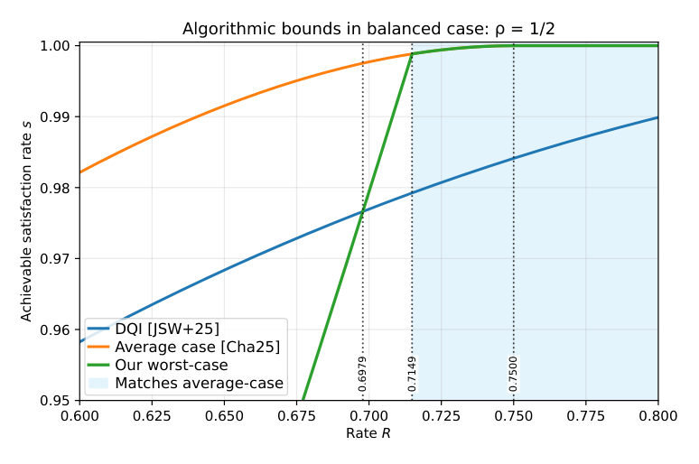
<figcaption class="paper-figure-caption"><b>Fig 1.</b> Figure 1: Comparison of achievable algorithmic satisfaction rates in the balanced case ρ = 1/2.</figcaption>
</figure>
<figure class="paper-figure-card">
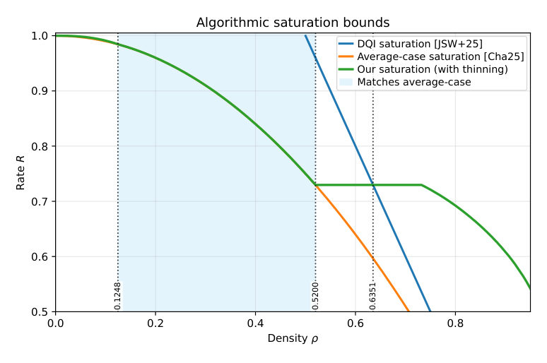
<figcaption class="paper-figure-caption"><b>Fig 2.</b> Figure 2: Comparison of algorithmic saturation bounds as functions of ρ. The direct application of Theorem 6.1 yields a non-monotone curve, with a bump for ρ &gt; 0.5200. This bump is only an artifact of the proof. Indeed, by a simple thinning argument (see Lemma A.1), we may replace the sets by smaller subsets, and hence replace ρ by a smaller value, without reducing the target satisfaction rate. Thus, for ρ &gt; 0.5200, we use the horizontal bound obtained by applying Theo- rem 6.1 at ρ ≈0.5200, wherever this improves upon the bound obtained from a direct application of Theorem 6.1 at the actual value of ρ.</figcaption>
</figure>
<figure class="paper-figure-card">
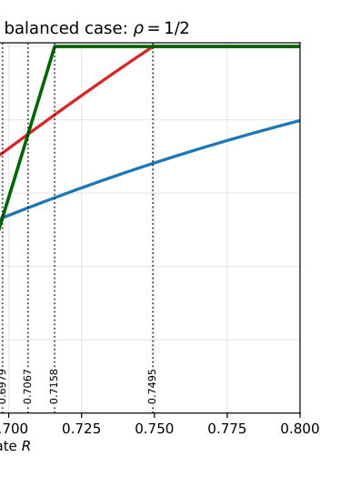
<figcaption class="paper-figure-caption"><b>Fig 3.</b> Figure 3: Comparison of existential satisfaction rates in the balanced case ρ = 1/2.</figcaption>
</figure>
<figure class="paper-figure-card">
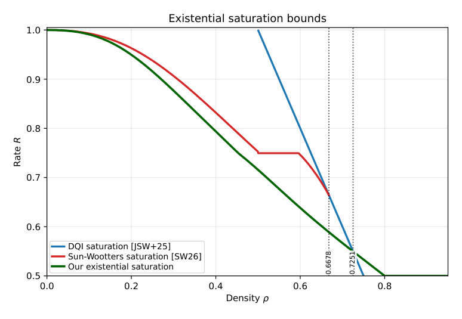
<figcaption class="paper-figure-caption"><b>Fig 4.</b> Figure 4: Comparison of existential saturation bounds as functions of ρ. The Sun–Wootters curve is based on [SW26, Theorems 1.6 and 1.9]. While [SW26, Theorem 1.9] gives a bound for general ρ, it has a bump for ρ &gt; 1/2. On the other hand, [SW26, Theorem 1.6] gives a better bound in the balanced case ρ ≈1/2. By a thinning argument similar to the one discussed in Appendix A, one can increase the density ρ without sacrificing the satisfaction rate. Thus, in the regime ρ ≥1/2, whenever the bound from [SW26, Theorem 1.9] is worse, we plot the thinned balanced-case bound, which gives R ≈0.7495.</figcaption>
</figure>
</div>

<p><strong>Summary.</strong> This paper develops a new worst-case quantum algorithm for solving the Optimal Polynomial Intersection problem. It significantly improves upon prior theoretical bounds by achieving high satisfaction rates ($s=1$) in regimes previously unreachable by DQI, particularly when analyzing MDS codes. The work advances the understanding of quantum computational limits for structured algebraic problems.</p>
<p><strong>Why it may be interesting.</strong> While highly abstract, the techniques involving quantum algorithms to solve hard combinatorial/coding theory problems (like list decoding or polynomial intersection) are foundational to understanding the limits of quantum computation for structured data processing.</p>
<details>
<summary>Detailed structure</summary>
<p><strong>Main problem.</strong> The paper addresses the Optimal Polynomial Intersection (OPI) problem, which seeks to find a low-degree polynomial satisfying membership constraints on many inputs.</p>
<p><strong>Main result.</strong> The authors present a novel quantum algorithm that solves OPI in the worst-case regime beyond what is achievable by Decoded Quantum Interferometry (DQI).</p>
<p><strong>Method.</strong> The core methodology involves applying a novel application of a Brascamp--Lieb-type inequality within the framework of Maximum Distance Separable (MDS) codes.</p>
<p><strong>Model / system.</strong> The problem is framed abstractly over finite fields ($\mathbb{F}_q$) and relies on quantum oracle access to membership information for prescribed subsets $\{S_i\}$.</p>
<p><strong>Key observables.</strong> Satisfaction rate ($s$), the ratio parameter $R=k/n$, and the existence threshold for a solution.</p>
<p><strong>Important parameters / regimes.</strong> The density $
ho = |S_i|/q$ is crucial, with specific focus on the balanced case $
ho=1/2$.</p>
<p><strong>Assumptions / limitations.</strong> General algorithmic results are restricted to MDS codes whose dual admits an efficient list decoder; initial guarantees were based on random choices of sets.</p>
<p><strong>Figures summary.</strong> Figure 1 compares achievable satisfaction rates ($s$) for DQI, average-case bounds, and the new worst-case algorithm in the balanced case. Figure 2 and Figure 3 compare saturation/satisfaction bounds across different regimes.</p>
<p><strong>Paper structure.</strong> The paper builds from establishing the OPI problem definition to comparing algorithmic bounds against prior work (DQI, average-case). It then develops the novel quantum algorithm using advanced inequalities in the MDS setting, culminating in improved worst-case and existential bounds for OPI and MaxLINSAT.</p>
</details>
<details>
<summary>Abstract</summary>
<p>The Optimal Polynomial Intersection (OPI) problem asks us to find a low-degree polynomial over a finite field whose values lie in prescribed subsets on as many given inputs as possible. Decoded quantum interferometry (DQI) gives a quantum algorithm for OPI in parameter regimes beyond those achieved by the best known classical heuristics. Follow-up works improve the parameter regimes, but their analyses are limited to average-case settings. Recently, Sun and Wootters showed that, even in the worst case, OPI has a solution in a larger parameter regime than the one covered by DQI. However, they left open whether one can design a quantum algorithm that solves OPI in the worst-case beyond the DQI regime.   We give such a quantum algorithm. As a byproduct, we also improve the existential bound of Sun and Wootters in certain parameter regimes. In particular, when each subset contains roughly half of the field elements, our algorithm finds a solution with satisfaction rate $s=1$ whenever the rate satisfies $R>0.75$. This matches the previous average-case bound, whereas DQI cannot achieve $s=1$ unless $R=1$. Our existential bound guarantees the existence of a solution when $R> 0.7158$, improving over the previous threshold $R>0.7495$. More generally, our existential results extend to the Max-LINSAT problem with respect to arbitrary maximum distance separable (MDS) codes. The corresponding algorithmic results apply only to MDS codes whose dual admits an efficient list decoder. Our results are obtained through a novel application of a Brascamp--Lieb-type inequality in the MDS setting, which may have further applications.</p>
</details>
<p><sub><a href="#top">↑ back to top</a></sub></p>
<h2 id="other-papers-5">Other papers (5)</h2>
<p><em>Papers from primary archives without highlighted authors or any topic match. Click to expand.</em></p>
<details>
<summary>Show other papers</summary>

<p><a id="paper-2607.14764"></a></p>
<h3 id="boson-peak-and-medium-range-elastic-heterogeneity-in-calcium-silicate-hydrate-probed-by-terahertz-spectroscopy-and-low-temperature-calorimetry"><a href="http://arxiv.org/abs/2607.14764v1">Boson peak and medium-range elastic heterogeneity in calcium silicate hydrate probed by terahertz spectroscopy and low-temperature calorimetry</a></h3>
<p><strong>Authors:</strong> Xiangyu Li, Ying Chen, Jipeng Luo, Ya Chen, Linhao Wang, Lidan Tian, Gan Ding, Zeyu Lu, Zhangli Hu, Biqin Dong, Yue Li, Zongjin Li<br>
<strong>Type:</strong> experiment · <strong>Category:</strong> disordered systems and neural networks · <strong>PDF:</strong> <a href="https://arxiv.org/pdf/2607.14764v1">https://arxiv.org/pdf/2607.14764v1</a><br>
<strong>Analysis basis:</strong> full PDF text, analyzed in chunks</p>
<div class="figure-strip-hint">↔ Scroll figures horizontally</div>
<div class="paper-figures-scroll">
<figure class="paper-figure-card">
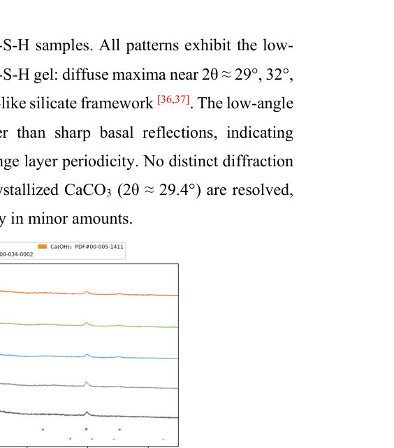
<figcaption class="paper-figure-caption"><b>Fig 1.</b> Fig. 1 XRD patterns of C-S-H at Ca/Si = 0.5–1.7, showing the broad, low-crystallinity</figcaption>
</figure>
<figure class="paper-figure-card">
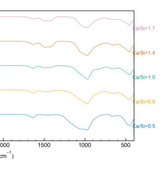
<figcaption class="paper-figure-caption"><b>Fig 2.</b> Fig. 2 FTIR spectra of C-S-H at Ca/Si = 0.5–1.7. The Si-O stretching band (900–1100</figcaption>
</figure>
<figure class="paper-figure-card">
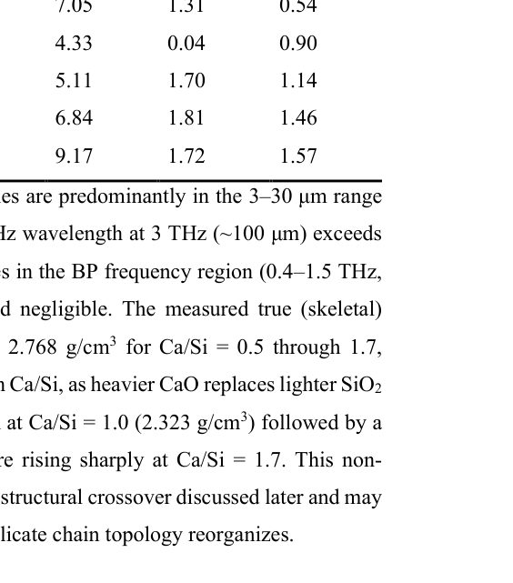
<figcaption class="paper-figure-caption"><b>Fig 3.</b> Fig. 3a displays representative time-domain waveforms after transmission through the C-</figcaption>
</figure>
<figure class="paper-figure-card">
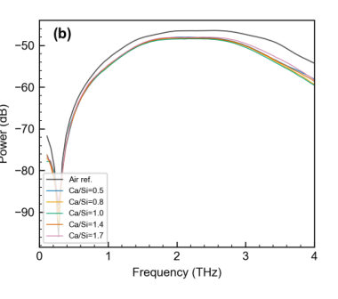
<figcaption class="paper-figure-caption"><b>Fig 4.</b> Fig. 3 (a) THz time-domain waveforms and (b) power spectra for the five C-S-H/COC</figcaption>
</figure>
<figure class="paper-figure-card">
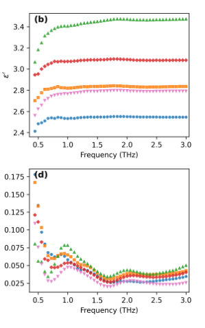
<figcaption class="paper-figure-caption"><b>Fig 5.</b> Fig. 4 Intrinsic THz optical properties of C-S-H after Bruggeman effective-medium</figcaption>
</figure>
</div>
<p><strong>Summary.</strong> The study investigates the Boson Peak and elastic heterogeneity in C-S-H using THz spectroscopy and calorimetry. By analyzing how these vibrational signatures change with composition, the authors identify a structural crossover mechanism governing material properties like creep. This dual-probe approach offers a quantitative link between nanoscale dynamics and concrete durability.</p>
<p><strong>Why it may be interesting.</strong> This work provides an experimental link between low-frequency vibrational anomalies (like the BP) and macroscopic material properties (creep/thermal transport) in amorphous solids, which is relevant to understanding energy dissipation mechanisms in complex disordered systems.</p>
<details>
<summary>Detailed structure</summary>
<p><strong>Main problem.</strong> The study aims to characterize the Boson Peak (BP) and medium-range elastic heterogeneity in Calcium Silicate Hydrate (C-S-H), linking nanoscale vibrational dynamics to macroscopic material durability.</p>
<p><strong>Main result.</strong> Both terahertz spectroscopy and calorimetry locate the BP near 1 THz, revealing a structural crossover marked by the evolution of an elastic heterogeneity parameter ($\gamma$) from 0.98 to 0.48 as Ca/Si increases.</p>
<p><strong>Method.</strong> The research employs a dual-probe approach combining Terahertz Time-Domain Spectroscopy (THz-TDS) and low-temperature calorimetry to probe vibrational dynamics in C-S-H samples synthesized with varying Ca/Si ratios.</p>
<p><strong>Model / system.</strong> The physical system is Calcium Silicate Hydrate (C-S-H), the binding phase of hardened cement, which acts as a disordered solid. The analysis involves fitting spectral data to models like Damped Harmonic Oscillators and analyzing the vibrational density of states.</p>
<p><strong>Key observables.</strong> Boson Peak frequency ($
u_{BP}$), medium-range dynamical correlation length ($\xi$), coherent-potential elastic-heterogeneity parameter ($\gamma$), THz integrated spectral weight, and calorimetric $C_p/T^3$ peak.</p>
<p><strong>Important parameters / regimes.</strong> Ca/Si ratios (0.5 to 1.7); BP frequency near 1 THz; $\gamma$ ranging from 0.98 to 0.48.</p>
<p><strong>Assumptions / limitations.</strong> The use of Bruggeman correction for crystalline impurities and the assumption that the dual-probe approach provides a comprehensive view beyond single-technique limitations.</p>
<p><strong>Figures summary.</strong> Not specified in detail, but comparisons are made between THz spectral weight vs. Ca/Si ratio and calorimetric $C_p/T^3$ peak vs. Ca/Si ratio to track structural crossovers.</p>
<p><strong>Paper structure.</strong> The paper systematically characterizes the BP using two complementary vibrational probes (THz-TDS and calorimetry) across varying compositions, analyzes the trends in spectral weight and heterogeneity parameters ($\gamma$), and interprets these findings as evidence of a structural crossover mechanism.</p>
</details>
<details>
<summary>Abstract</summary>
<p>The boson peak (BP), a universal vibrational anomaly of disordered solids, has been predicted but not systematically characterized in calcium silicate hydrate (C-S-H), the binding phase of hardened cement. Building on a preliminary terahertz survey, we characterize the BP across five Ca/Si ratios (0.5-1.7) using terahertz time-domain spectroscopy (THz-TDS) and low-temperature calorimetry, two probes of vibrational dynamics that complement the static picture of conventional structural methods. After Bruggeman correction for crystalline impurities, both probes locate the BP near 1 THz; they agree on frequency but diverge in intensity. The terahertz integrated spectral weight and the calorimetric Cp/T3 peak both fall monotonically with Ca/Si, whereas the apparent terahertz peak height is maximal at Ca/Si = 1.0, where damping is low and oscillator strength still substantial. This decoupling marks a structural crossover between silicate-chain depolymerization and interlayer calcium filling. From the BP we obtain a medium-range dynamical correlation length of order 1 nm (0.3-2 nm) and a coherent-potential elastic-heterogeneity parameter that decreases from gamma = 0.98 to 0.48 as Ca/Si rises; the Debye-normalized BP frequency (nu_BP/nu_D = 0.15-0.17) places C-S-H within the range reported for silicate glasses. Because gamma governs the distribution of energy barriers for local structural rearrangements, it provides a quantitative, composition-resolved descriptor relevant to the intrinsic creep and thermal transport of C-S-H, linking nanoscale vibrational dynamics to the macroscopic durability of concrete. The dual-probe boson-peak approach is transferable to other amorphous solids, including the supplementary cementitious materials of low-carbon cements.</p>
</details>
<p><sub><a href="#top">↑ back to top</a></sub></p>

<p><a id="paper-2607.15159"></a></p>
<h3 id="ldgm-based-quantum-codes-for-fault-tolerant-quantum-computation"><a href="http://arxiv.org/abs/2607.15159v1">LDGM-Based Quantum Codes for Fault-Tolerant Quantum Computation</a></h3>
<p><strong>Authors:</strong> Yumin Li, Kejing Liu, Hanqing Lou, Javier Garcia-Frias<br>
<strong>Type:</strong> theory · <strong>Category:</strong> quantum information and computing · <strong>PDF:</strong> <a href="https://arxiv.org/pdf/2607.15159v1">https://arxiv.org/pdf/2607.15159v1</a><br>
<strong>Analysis basis:</strong> full PDF text, analyzed in chunks</p>
<div class="figure-strip-hint">↔ Scroll figures horizontally</div>
<div class="paper-figures-scroll">
<figure class="paper-figure-card">
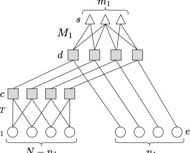
<figcaption class="paper-figure-caption"><b>Fig 1.</b> Fig. 1: Decoding graph for matrix H, consisting of the X-containing stabilizer generators, utilized to decode ez</figcaption>
</figure>
<figure class="paper-figure-card">
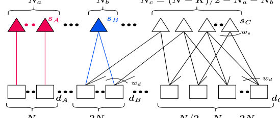
<figcaption class="paper-figure-caption"><b>Fig 2.</b> Fig. 2: Graph associated with proposed matrix M. Each doping/sA syndrome node is connected to one d node</figcaption>
</figure>
<figure class="paper-figure-card">
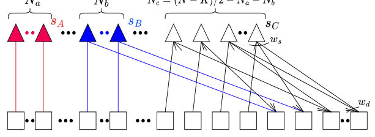
<figcaption class="paper-figure-caption"><b>Fig 3.</b> Fig. 3: Graph associated with the matrix M utilized in the upper layer for the design of codes well suited for</figcaption>
</figure>
<figure class="paper-figure-card">
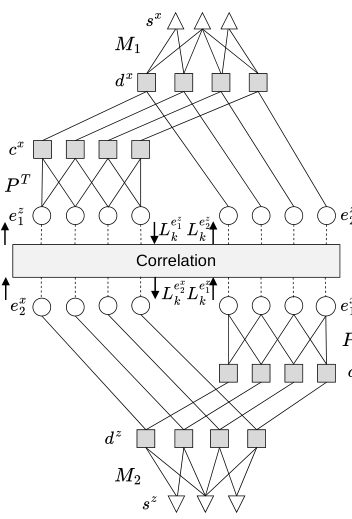
<figcaption class="paper-figure-caption"><b>Fig 4.</b> Fig. 4: Decoding graph for a CSS code with matrices H = M1[P T I] and G = M2[I P] utilized in the depolarizing</figcaption>
</figure>
<figure class="paper-figure-card">
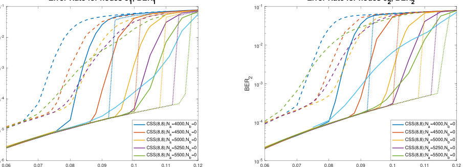
<figcaption class="paper-figure-caption"><b>Fig 5.</b> Fig. 5: DDE predictions and simulated residual error rate in both e1 and e2 for a family of quantum codes designed</figcaption>
</figure>
</div>
<p><strong>Summary.</strong> This paper introduces a method to construct high-performance quantum error-correcting codes by adapting Low-Density Generator Matrix (LDGM) codes into Calderbank-Shor-Steane (CSS) structures. The authors analyze the performance of these codes under depolarizing noise using iterative decoding and Density Evolution, showing that careful structural design can yield excellent fault-tolerance capabilities.</p>
<p><strong>Why it may be interesting.</strong> The detailed analysis of error thresholds and error floors using established coding theory tools (LDGM codes) provides concrete benchmarks for designing robust quantum computation protocols relevant to open quantum systems.</p>
<details>
<summary>Detailed structure</summary>
<p><strong>Main problem.</strong> The primary goal is developing quantum error-correcting codes suitable for fault-tolerant quantum computation.</p>
<p><strong>Main result.</strong> The authors propose a new family of CSS codes built from LDGM matrices, demonstrating that optimizing the code structure can significantly improve performance thresholds while maintaining low error floors.</p>
<p><strong>Method.</strong> They construct the codes using row operations on LDGM generator and parity-check matrices, employing iterative message passing decoding (belief propagation) optimized via Discrete Density Evolution (DDE).</p>
<p><strong>Model / system.</strong> The system is a quantum stabilizer code structured as a CSS code. The construction leverages the sparsity of classical LDGM codes to satisfy necessary mathematical constraints for quantum error correction.</p>
<p><strong>Key observables.</strong> Residual error rates ($    ext{BER}_1,     ext{BER}_2$), convergence threshold, and error floor performance under depolarizing noise.</p>
<p><strong>Important parameters / regimes.</strong> Depolarizing parameter ($p$), LDGM code degree (e.g., $(8, 8)$ to $(12, 12)$), and structural parameters like $N_a$ and $N_b$.</p>
<p><strong>Assumptions / limitations.</strong> The analysis relies on the equivalence between iterative message passing decoding simulations and predictions derived from Discrete Density Evolution (DDE).</p>
<p><strong>Figures summary.</strong> Figures illustrate how optimizing structural parameters ($N_b$) improves thresholds, how code degree affects error floors versus thresholds, and general performance trends across varying noise levels.</p>
<p><strong>Paper structure.</strong> The paper progresses from establishing the mathematical framework for CSS codes using LDGM matrices (satisfying commutativity conditions) to detailing the decoding process via message passing. It then moves into rigorous performance analysis by simulating residual errors under depolarizing noise, comparing results against DDE predictions while varying structural and code parameters.</p>
</details>
<details>
<summary>Abstract</summary>
<p>We construct a new family of Calderbank-Shor-Steane (CSS) codes using the generator and parity-check matrices of Low-Density Generator Matrix (LDGM) codes, with row operations applied to both matrices in order to achieve the desired quantum rate. Decoding is performed in an iterative manner, by applying message passing over the associated graph, and discrete Density Evolution (DDE) is used to optimize performance in the depolarizing channel. The proposed construction offers high flexibility and easiness in the design, producing quantum codes that possess excellent error correction capabilities. By properly designing the structure of the code, we are able to control and bound the weight of the stabilizer generators to a small value, which results in codes particularly well suited for fault-tolerant quantum computation. At the same time, these codes achieve very good performance in terms of error correction capability.</p>
</details>
<p><sub><a href="#top">↑ back to top</a></sub></p>

<p><a id="paper-2607.14988"></a></p>
<h3 id="quantum-xyz-stabilizer-codes"><a href="http://arxiv.org/abs/2607.14988v1">Quantum XYZ Stabilizer Codes</a></h3>
<p><strong>Authors:</strong> Alessio Baldelli, Davide Orsucci, Francisco Lázaro, Massimo Battaglioni<br>
<strong>Type:</strong> theory · <strong>Category:</strong> quantum information and computing · <strong>PDF:</strong> <a href="https://arxiv.org/pdf/2607.14988v1">https://arxiv.org/pdf/2607.14988v1</a><br>
<strong>Analysis basis:</strong> full PDF text, analyzed in chunks</p>
<div class="figure-strip-hint">↔ Scroll figures horizontally</div>
<div class="paper-figures-scroll">
<figure class="paper-figure-card">
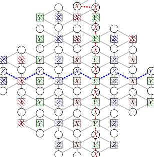
<figcaption class="paper-figure-caption"><b>Fig 1.</b> Fig. 1. Tanner graph of the CXYZ´2DJ50, 1, 5K. Circles represent qubits and squares represent stabilizers. The qubits joined by a dashed line form minimum-weight logical operators of pure type (in red, weight 2d ´ 1 “ 9) and mixed type (in blue, weight d “ 5).</figcaption>
</figure>
<figure class="paper-figure-card">
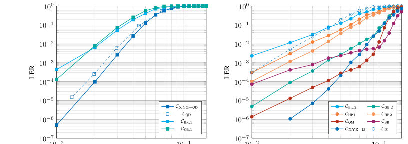
<figcaption class="paper-figure-caption"><b>Fig 2.</b> Fig. 2. Monte Carlo simulations of the LER under BP4 CN serial decoding over a code-capacity noise model, as a function of p. (a): comparison between the LER of CXYZ´QD and some state-of-the-art CSS codes. With dashed lines and empty squares, we report the code CQD decoded using the CAMEL decoder of [20]. (b): comparison between the LER of CXYZ´IS and several state-of-the-art CSS codes. With dashed lines and empty dots, we report the code CIS.</figcaption>
</figure>
</div>
<p><strong>Summary.</strong> This paper introduces quantum XYZ stabilizer codes as a generalization beyond traditional CSS structures in Quantum Error Correction. The authors derive conditions to characterize this new structure and construct sparse qLDPC families using IS and QD methods. Simulations demonstrate that these XYZ codes can achieve lower error rates than comparable CSS codes, suggesting improved performance for near-term quantum computation.</p>
<p><strong>Why it may be interesting.</strong> It pushes the boundaries of structured quantum error correction by exploring non-CSS stabilizer constraints, which is crucial for designing practical fault-tolerant quantum hardware architectures.</p>
<details>
<summary>Detailed structure</summary>
<p><strong>Main problem.</strong> To extend standard Calderbank–Shor–Steane (CSS) Quantum Error Correction Codes by introducing quantum XYZ stabilizer codes, which incorporate Y-type generators.</p>
<p><strong>Main result.</strong> The proposed XYZ qLDPC constructions show superior finite-length performance in terms of Logical Error Rate (LER) compared to comparable CSS qLDPC instances under belief propagation decoding.</p>
<p><strong>Method.</strong> Theoretical characterization involves deriving algebraic and rank conditions for the non-CSS nature of the code, complemented by numerical simulations using Monte Carlo methods.</p>
<p><strong>Model / system.</strong> The system is a quantum error correcting code defined over Pauli operators on $n$ qubits. The model generalizes stabilizer codes from the CSS framework to incorporate three pairwise orthogonal parity-check matrices for X-, Y-, and Z-type generators.</p>
<p><strong>Key observables.</strong> Quantum minimum distance ($d$), Logical Error Rate (LER), coding rate ($R=k/n$).</p>
<p><strong>Important parameters / regimes.</strong> Depolarizing noise probability ($p$), block length ($n$), code parameters derived from Intersecting Subset (IS) and Quasi-dyadic (QD) families.</p>
<p><strong>Assumptions / limitations.</strong> The comparison relies on finite-length evidence from simulations, and the authors characterize when the XYZ structure collapses back to a CSS structure.</p>
<p><strong>Figures summary.</strong> Figure 2 compares LER vs. noise probability ($p$) for $C_{	ext{XYZ}}^{	ext{QD}}$ and $C_{	ext{XYZ}}^{	ext{IS}}$ against several state-of-the-art CSS qLDPC benchmarks, showing performance advantages for the XYZ codes.</p>
<p><strong>Paper structure.</strong> The paper defines the XYZ code structure, analyzes minimum distance bounds theoretically, proposes new sparse finite-length constructions based on IS and QD families, and concludes with simulations comparing these against existing CSS benchmarks.</p>
</details>
<details>
<summary>Abstract</summary>
<p>Stabilizer codes are often constructed within the Calderbank--Shor--Steane (CSS) framework, where two mutually orthogonal binary classical codes define $X$ and $Z$-type stabilizer generators. While this structure is algebraically convenient, additional non-CSS constraints may help suppress low-weight logical operators and improve decoding performance in the finite-length regime. We thus introduce quantum XYZ stabilizer codes, whose parity-check matrix (PCM) is built from three pairwise orthogonal binary PCMs associated with $X$-, $Y$-, and $Z$-type stabilizer generators. A nontrivial point is that an XYZ code instance is not automatically genuinely non-CSS: the same stabilizer group may admit a CSS generating set. We characterize this collapse, obtaining algebraic and rank conditions for deciding when the $Y$-type checks are redundant and when they define genuinely non-CSS stabilizer constraints. We also derive upper and lower bounds on the quantum minimum distance, including bounds for mixed Pauli logical operators. The novel framework includes a known non-CSS topological code, namely the XYZ$^2$ hexagonal code, and yields also sparse finite-length quantum low-density parity-check (qLDPC) constructions from intersecting-subset and quasi-dyadic code families. Simulations under depolarizing code-capacity noise and quaternary belief propagation decoding show that the proposed XYZ qLDPC instances can outperform representative CSS qLDPC instances with similar finite-length parameters.</p>
</details>
<p><sub><a href="#top">↑ back to top</a></sub></p>

<p><a id="paper-2607.15076"></a></p>
<h3 id="sqd-enabled-circuit-compression-for-resource-efficient-quantum-chemistry"><a href="http://arxiv.org/abs/2607.15076v1">SQD-Enabled Circuit Compression for Resource-Efficient Quantum Chemistry</a></h3>
<p><strong>Authors:</strong> Kangyu Zheng, Yidong Zhou, Jinglei Cheng, Zhemin Zhang, Shaohua Li, Zhiding Liang<br>
<strong>Type:</strong> both · <strong>Category:</strong> quantum information and computing · <strong>PDF:</strong> <a href="https://arxiv.org/pdf/2607.15076v1">https://arxiv.org/pdf/2607.15076v1</a><br>
<strong>Analysis basis:</strong> full PDF text, analyzed in chunks</p>
<div class="figure-strip-hint">↔ Scroll figures horizontally</div>
<div class="paper-figures-scroll">
<figure class="paper-figure-card">
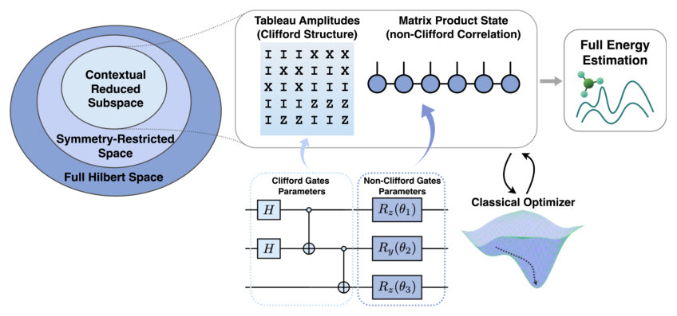
<figcaption class="paper-figure-caption"><b>Fig 1.</b> Fig. 1. Overview of the proposed pipeline. The full Hilbert space is compressed into a contextual reduced subspace capturing the dominant low-energy structure of the molecule. Inside this subspace, the quantum state is expressed via a dual representation: a stabilizer-tableau component encoding Clifford-compatible structure and an MPS component capturing non-Clifford correlations. During variational optimization, Clifford gates act only on the tableau representation and non-Clifford gates act only on the MPS component, coordinated by a classical optimizer. The optimized reduced-space state is finally lifted back to the full orbital space using a precomputed inverse mapping, enabling...</figcaption>
</figure>
<figure class="paper-figure-card">

<figcaption class="paper-figure-caption"><b>Fig 2.</b> Fig. 2. Relative energy error versus FCI comparison under full parameters mode</figcaption>
</figure>
<figure class="paper-figure-card">

<figcaption class="paper-figure-caption"><b>Fig 3.</b> Fig. 3. Runtime speedup of CS-VQE+SQD vs. standard VQE across 21 molecules (uncompressed baseline, fg=1, fc=1). Molecules are sorted by descending speedup. HCl achieves 590× due to aggressive qubit reduction (20→3 qubits); molecules with large contextual subspaces (BH, CH+) show modest gains.</figcaption>
</figure>
<figure class="paper-figure-card">

<figcaption class="paper-figure-caption"><b>Fig 4.</b> Fig. 4. Ablation heatmap across 21 molecules. Left: median SQD energy error (mHa). Right: median simulation speedup (×). Rows vary gradient fraction fg; columns vary Clifford fraction fc. Error remains within chemical accuracy (1.6 mHa, bold in Table I) for the top-left region; speedup increases toward the bottom-right. The fc = 0.00 column shows a phase transition: accuracy collapses when no non-Clifford gates remain, but speedup peaks.</figcaption>
</figure>
<figure class="paper-figure-card">

<figcaption class="paper-figure-caption"><b>Fig 5.</b> Fig. 5. Absolute transpiled circuit depth on ibm_rensselaer across four configurations. The depth reduction scales with molecule size: H2O (168 parameters) drops from 4437 to 1690; small molecules (Be, B+) are already shallow and show no change.</figcaption>
</figure>
</div>
<p><strong>Summary.</strong> The paper introduces a resource-efficient workflow for quantum chemistry simulations that tackles NISQ constraints. It combines qubit reduction and circuit compression techniques (pruning/rounding) with a post-processing Subspace Quantum Diagonalization (SQD). This methodology allows for substantial speedups while preserving chemical accuracy by leveraging SQD's tolerance to imperfect input circuits.</p>
<p><strong>Why it may be interesting.</strong> This work directly addresses hardware limitations in quantum simulation by decoupling the need for high variational accuracy (VQE) from the requirement of deep circuits, making complex chemistry problems feasible on current noisy devices.</p>
<details>
<summary>Detailed structure</summary>
<p><strong>Main problem.</strong> The primary challenge is performing quantum chemistry simulations on noisy, resource-constrained Near-term Intermediate-Scale Quantum (NISQ) hardware while maintaining chemical accuracy.</p>
<p><strong>Main result.</strong> The proposed pipeline achieves significant runtime speedups (up to $33	imes$) by aggressively compressing the required quantum circuit depth without losing energy accuracy due to a post-processing Subspace Quantum Diagonalization (SQD) step.</p>
<p><strong>Method.</strong> The approach combines qubit reduction, applying two compression techniques—gradient-based operator pruning and Clifford rounding—to the VQE ansatz, followed by SQD for final energy recovery.</p>
<p><strong>Model / system.</strong> The system studied is molecular electronic structure calculation using Hamiltonians mapped to qubits (e.g., $   ext{H}_2    ext{O}$, $  ext{N}_2$). The process involves projecting the full Hamiltonian onto a low-energy contextual subspace.</p>
<p><strong>Key observables.</strong> Ground-state energies, relative energy error compared to Full Configuration Interaction (FCI), and circuit depth/runtime speedup.</p>
<p><strong>Important parameters / regimes.</strong> Chemical accuracy threshold ($1.6 	ext{ mHa}$), compression levels (e.g., 50% reduction on both axes).</p>
<p><strong>Assumptions / limitations.</strong> The core assumption is that SQD's ability to classically diagonalize sampled bitstrings allows the preceding quantum circuit (VQE) to be significantly degraded without compromising the final energy result.</p>
<p><strong>Figures summary.</strong> Figure 1 illustrates the entire pipeline: contextual subspace projection $
ightarrow$ compressed VQE $
ightarrow$ SQD recovery. Other figures compare relative energy errors vs FCI and show runtime speedups across multiple molecules.</p>
<p><strong>Paper structure.</strong> The paper details a multi-stage pipeline: first, qubit reduction via contextual subspace methods; second, constructing a compressed VQE ansatz using gradient pruning and Clifford rounding; and third, utilizing SQD to recover the final ground-state energy from the resulting limited sampling circuit.</p>
</details>
<details>
<summary>Abstract</summary>
<p>Subspace Quantum Diagonalization (SQD) recovers ground-state energies by classically diagonalizing a Hamiltonian in the subspace spanned by quantum samples, requiring only bitstrings with sufficient ground-state overlap rather than an accurate variational energy. We reveal and exploit this underexplored robustness property: how much non-Clifford and variational expressivity can be removed from the sampling circuit before SQD accuracy degrades? We answer through two complementary compression techniques: gradient-based operator pruning, which discards low-impact excitation operators, and Clifford rounding, which snaps remaining parameters to the nearest Clifford angle. Both of these techniques can be applied to a VQE ansatz on a qubit-reduced Hamiltonian. A systematic ablation study across 21 molecules shows that median SQD error stays within chemical accuracy even at 50\% compression on both axes, while simulation speedup reaches $33\times$. Hardware validation on 6 molecules on IBM quantum hardware confirms up to $2.8\times$ transpiled-depth reduction with zero loss in SQD accuracy.</p>
</details>
<p><sub><a href="#top">↑ back to top</a></sub></p>

<p><a id="paper-2607.14484"></a></p>
<h3 id="syndrome-as-header-a-quantum-label-switching-architecture-via-uncorrectable-error-injection"><a href="http://arxiv.org/abs/2607.14484v1">Syndrome-as-Header: A Quantum Label-Switching Architecture via Uncorrectable Error Injection</a></h3>
<p><strong>Authors:</strong> IlKwon Sohn, Ju-Bong Kim, Kwangil Bae, Wooyeong Song, Wonhyuk Lee<br>
<strong>Type:</strong> theory · <strong>Category:</strong> quantum information and computing · <strong>PDF:</strong> <a href="https://arxiv.org/pdf/2607.14484v1">https://arxiv.org/pdf/2607.14484v1</a><br>
<strong>Analysis basis:</strong> full PDF text, analyzed in chunks</p>
<div class="figure-strip-hint">↔ Scroll figures horizontally</div>
<div class="paper-figures-scroll">
<figure class="paper-figure-card">

<figcaption class="paper-figure-caption"><b>Fig 1.</b> Fig. 1. Illustrative comparison of forwarding-header abstractions. (a) An address-dominated classical header carries endpoint address fields, type/control information, and payload. (b) The proposed logical compact header h = (ℓ, q) contains only a flow label and a sequence number, which are mapped via UEI to an admissible reference syndrome sref(h) and embedded across encoded blocks. The comparison highlights compact syndrome-domain forwarding without requiring a classical frame format for quantum packets.</figcaption>
</figure>
<figure class="paper-figure-card">

<figcaption class="paper-figure-caption"><b>Fig 2.</b> Fig. 2. Overview of the proposed SAH architecture in FAST and VERIFICATION modes. The ingress embeds a per-block compact header h into an encoded block via a UEI labeling operator Elab(h) with reference syndrome sref(h) = f(h) = s(Elab(h)); core routers identify the in-band header, infer the residual channel-error component, apply the corresponding correction, and swap labels without decoding the logical payload. FAST mode performs autonomous label switching using the in-band header and pre-installed swap rules, whereas VERIFICATION mode additionally embeds a flow-specific verification component Ever with sver = s(Ever) and checks it at the egress before payload release. The classical...</figcaption>
</figure>
<figure class="paper-figure-card">

<figcaption class="paper-figure-caption"><b>Fig 3.</b> Fig. 3. NSFNet topology used in the performance evaluation. Edge labels indicate link lengths in kilometers.</figcaption>
</figure>
<figure class="paper-figure-card">

<figcaption class="paper-figure-caption"><b>Fig 4.</b> Fig. 4. Evaluation under control-plane jitter in the QEC-normalized timing benchmark, averaged over 30 independent random seeds. (a) Acceptance probability. SAH FAST is evaluated with the physical-T2-mapped memory-residence penalty for T2 ∈{1 ms, 500 µs, 300 µs, 100 µs}, while SAH VERIFICATION is shown at T2 = 1 ms. (b) Effective accepted-block throughput. The SAH curves in (b) use the T2 = 1 ms setting. Because all schemes use the same offered traffic trace, the throughput trend in (b) follows the acceptance behavior in (a). OBS+QEC and QW+QEC nearly coincide in both panels.</figcaption>
</figure>
<figure class="paper-figure-card">

<figcaption class="paper-figure-caption"><b>Fig 5.</b> Fig. 5. Mean delivered latency under control-plane jitter in the QEC- normalized timing benchmark, averaged over 30 independent random seeds. For SAH, the delivered-block population is evaluated under the T2 = 1 ms setting. The reported latency includes the processing stages specified in the simulation model and is averaged over accepted payload blocks.</figcaption>
</figure>
</div>
<p><strong>Summary.</strong> This paper introduces Syndrome-as-Header (SAH), a new quantum label-switching architecture designed to enable scalable quantum networking. SAH embeds routing labels within the syndrome structure of encoded qubits using Uncorrectable Error Injection. This method bypasses critical timing alignment issues inherent in existing protocols, allowing for robust forwarding even under high control-plane jitter.</p>
<p><strong>Why it may be interesting.</strong> It provides a novel protocol for network routing that integrates directly into the error correction framework, making it highly relevant for quantum communication hardware design where timing jitter is a major bottleneck.</p>
<details>
<summary>Detailed structure</summary>
<p><strong>Main problem.</strong> Scaling quantum networks beyond point-to-point links requires packet forwarding that can tolerate control-plane timing uncertainty, which existing methods fail to achieve.</p>
<p><strong>Main result.</strong> The proposed Syndrome-as-Header (SAH) architecture eliminates the strict external-header/payload alignment condition by embedding routing labels directly into the syndrome structure of the encoded payload.</p>
<p><strong>Method.</strong> SAH uses Uncorrectable Error Injection (UEI) to map flow labels to reference syndromes, allowing core routers to swap labels solely by extracting and manipulating the syndrome header without decoding the logical payload.</p>
<p><strong>Model / system.</strong> The system models a quantum label-switching network inspired by MPLS, using qubits encoded via an $[[n, k, d]]$ stabilizer code. Forwarding relies on local per-hop memory residence rather than long-term end-to-end storage.</p>
<p><strong>Key observables.</strong> Acceptance probability and throughput under high jitter; delivered latency; syndrome header extraction success rate.</p>
<p><strong>Important parameters / regimes.</strong> Router memory coherence time ($T_2$); physical error rate per hop ($p_{ch}$); code parameters ($n, k, d$).</p>
<p><strong>Assumptions / limitations.</strong> The advantage depends on sufficient router memory coherence ($T_2$); the classical control plane is assumed reliable for distributing label bindings.</p>
<p><strong>Figures summary.</strong> Figures compare SAH performance against OBS+QEC and QW+QEC under jitter, showing superior throughput; other figures detail syndrome-space header mapping and mode operation (FAST/VERIFICATION).</p>
<p><strong>Paper structure.</strong> The paper introduces the limitations of current quantum packet switching, proposes the SAH mechanism using UEI to embed labels in syndromes, details the FAST and VERIFICATION modes, and validates performance against benchmarks showing timing robustness.</p>
</details>
<details>
<summary>Abstract</summary>
<p>Scaling quantum networks beyond point-to-point links requires packet forwarding that can tolerate control-plane timing uncertainty. Existing optical-burst switching (OBS) and quantum-wrapper-based packet switching (QW) rely on external classical headers whose jitter-prone processing must remain aligned with in-flight quantum payloads, creating guard-window or fiber-delay-line budget failures. This paper proposes Syndrome-as-Header (SAH), a quantum label-switching architecture that embeds routing labels into the syndrome structure of an encoded payload. The proposed scheme uses Uncorrectable Error Injection (UEI) to map flow labels to reference syndromes and builds a syndrome-space header codebook whose decoding regions remain distinguishable under correctable channel-induced syndrome deviations. Core routers extract the syndrome header, suppress the correctable residual channel-error component, and swap labels without measuring or decoding the logical payload. SAH supports FAST forwarding and VERIFICATION mode, the latter providing end-to-end consistency checking while retaining swappable labels. In NSFNet timing benchmarks with common per-hop quantum error correction (QEC), SAH eliminates the external-header/payload alignment condition, so timing uncertainty appears as memory residence and delivered latency rather than alignment-budget drops. With a $T_2$-based memory-residence penalty, the advantage depends on router memory coherence; for sufficiently long coherence, SAH maintains higher acceptance and throughput than OBS+QEC and QW+QEC under high jitter.</p>
</details>
<p><sub><a href="#top">↑ back to top</a></sub></p>
</details>
<h2 id="secondary-cond-mat-archives">Secondary cond-mat archives</h2>
<p><em>Papers from cond-mat.mtrl-sci, mes-hall, other, soft, supr-con. These archives are de-prioritized — they appear at the end regardless of relevance score.</em></p>
<h3 id="relevant-in-secondary-archives-12">Relevant in secondary archives (12)</h3>

<p><a id="paper-2607.15259"></a></p>
<h3 id="long-range-and-steady-state-entanglement-of-driven-dissipative-nitrogen-vacancy-centers-using-microwaves-as-a-drive-and-synthetic-antiferromagnet-as-a-dissipator"><a href="http://arxiv.org/abs/2607.15259v1">Long-range and steady-state entanglement of driven-dissipative nitrogen vacancy centers using microwaves as a drive and synthetic antiferromagnet as a dissipator</a></h3>
<p><strong>Authors:</strong> Federico Garcia-Gaitan, Branislav K. Nikolic<br>
<strong>Type:</strong> theory · <strong>Category:</strong> quantum information and computing · <strong>PDF:</strong> <a href="https://arxiv.org/pdf/2607.15259v1">https://arxiv.org/pdf/2607.15259v1</a><br>
<strong>Analysis basis:</strong> full PDF text, analyzed in chunks
<strong>Topic relevance:</strong> 🔥 <code>correlated / nonlocal dissipation</code> <strong>4/5</strong> · 🔥 <code>entanglement &amp; information structure</code> <strong>4/5</strong> · 🔥 <code>methods for driven-dissipative</code> <strong>4/5</strong> · <code>non-equilibrium dynamics</code> <strong>3/5</strong> · <code>spintronics-quantum-optics interface</code> <strong>3/5</strong> · <code>Keldysh / 2PI / non-Gaussian methods</code> <strong>2/5</strong> · <code>QC/QI experiment</code> <strong>2/5</strong> · <code>driven-dissipative phase transition</code> <strong>2/5</strong> · <code>analog quantum simulation</code> <strong>1/5</strong> · <code>exotic spin models in light-matter</code> <strong>1/5</strong> · <code>non-equilibrium universality</code> <strong>1/5</strong></p>
<div class="figure-strip-hint">↔ Scroll figures horizontally</div>
<div class="paper-figures-scroll">
<figure class="paper-figure-card">

<figcaption class="paper-figure-caption"><b>Fig 1.</b> FIG. 1. Schematic view of two NVCs (balls separated by a distance d) driven by microwaves (of frequency ω and am- plitude imposing Rabi frequency [1] ΩR) and dipolarly inter- acting (across distance h) with SAF acting as a dissipative bath. The SAF, routinely fabricated in spintronics [23], con- sists of two ferromagnetic monolayers with antiferromagnetic interlayer tunable exchange interaction JAF, where an exter- nal in-plane magnetic field B cants magnetizations M1 and M2 of two monolayers. Stray-field fluctuations (green wavy line) due to magnon excitations of the SAF couple to induce cooperative (as NVCs interact with a shared single SAF bath) decay Γij, pump ˜Γij, and dephasing Γz ij...</figcaption>
</figure>
<figure class="paper-figure-card">

<figcaption class="paper-figure-caption"><b>Fig 2.</b> FIG. 3. (a) Energy-momentum dispersion of magnons in SAF [Eq. (8)], where the horizontal lines denote frequencies at which parameters for decay, pump, and dephasing rates are evaluated [Eq. (6)] in (b) as a function of the distance d be- tween two NVCs. The maximum distances ensuring nonzero entanglement in Fig. 2(a) are indicated by arrows at the ab- scissa. The shorter distance estimate is for the dephasing- induced constraint shown in Fig. 2(c). The optimal position of the horizontal lines in (a) can be tuned by the Rabi fre- quency ΩR and energy splitting ∆of NVCs.</figcaption>
</figure>
<figure class="paper-figure-card">

<figcaption class="paper-figure-caption"><b>Fig 3.</b> FIG. 2. Steady-state entanglement of two NVCs in the setup of Fig. 1 with generic bath (not necessarily SAF), as quan- tified by the concurrence C[ˆρSS] of the steady-state density matrix [Eq. (7)]. Panels (a) and (b) show C[ˆρSS] vs. the local and nonlocal pump-to-decay ratios |Γ11/˜Γ11| and |Γ12/˜Γ12| for the case in which the bath-induced dephasing [Eq. (6c)] and coherent couplings [Eq. (5)] are switched off. So, in this case, entanglement is generated solely by the cooperative de- cay [Eq. (6a)] and pump [Eq. (6b)] rates, at fixed coopera- tivity |Γ12/Γ11| = 0.90 in panel (a) and |Γ12/Γ11| = 0.99 in panel (b). The grey upper triangle in panels (a) and (b) de- notes unphysical...</figcaption>
</figure>
</div>

<p><strong>Summary.</strong> The paper theoretically demonstrates how long-range, steady-state entanglement can be engineered between distant NV centers using microwave driving coupled to a synthetic antiferromagnet bath. By solving the resulting Lindblad master equation, the authors predict measurable concurrence values at separations of 100 nm, offering a robust platform for quantum memory and computation.</p>
<p><strong>Why it may be interesting.</strong> This work provides a concrete theoretical pathway for engineering quantum coherence in solid-state systems by leveraging non-equilibrium dissipation mechanisms (driven baths), which is highly relevant to open quantum system dynamics and scalable qubit architectures.</p>
<details>
<summary>Detailed structure</summary>
<p><strong>Main problem.</strong> The primary goal is to establish a method for generating and maintaining long-range, steady-state entanglement between two distant Nitrogen-Vacancy (NV) centers in diamond.</p>
<p><strong>Main result.</strong> The authors predict that steady-state entanglement can be achieved using microwave driving and coupling the NVCs to a synthetic antiferromagnet (SAF) bath, reaching concurrence values up to $\mathcal{C} \simeq 0.28$ at separations of $\sim 100$ nm.</p>
<p><strong>Method.</strong> The analysis relies on deriving and solving a Lindblad quantum master equation (QME) for the driven-dissipative system, utilizing Non-Equilibrium Green's Functions (NEGF) to calculate dissipation parameters.</p>
<p><strong>Model / system.</strong> The system consists of two NVC qubits coupled via dipolar interactions ($\hat{H}_{	ext{int}}$), subjected to microwave driving ($\hat{H}_{	ext{NVCs}}$), and dissipating into a magnetic bath modeled as an SAF. The dynamics are governed by the QME: $\partial_t\hat{
ho}(t) = -i[\hat{H}_I, \hat{
ho}(t)] + L[\hat{
ho}(t)]$.</p>
<p><strong>Key observables.</strong> Steady-state concurrence ($C[\hat{
ho}_{SS}]$), which quantifies the degree of entanglement.</p>
<p><strong>Important parameters / regimes.</strong> Separation distance ($d \sim 100$ nm), microwave driving frequency ($\Omega_R$), and bath parameters derived from SAF susceptibilities.</p>
<p><strong>Assumptions / limitations.</strong> The derivation assumes weak system-bath coupling, short bath correlation times (standard Lindblad assumptions), and that the magnetic bath remains in thermal equilibrium while the NVCs are driven out of equilibrium.</p>
<p><strong>Figures summary.</strong> Figures illustrate the setup showing microwave driving and SAF dissipation; one figure analyzes entanglement dependence on various decay/pump rates ($\Gamma_{ij}, 	ilde{\Gamma}_{ij}$); another shows the magnon dispersion relation for the SAF bath, guiding parameter selection.</p>
<p><strong>Paper structure.</strong> The paper first establishes the physical problem (long-range steady-state entanglement) and derives the Lindblad QME. It then uses NEGF to calculate necessary dissipative parameters ($\Gamma_{ij}, 	ilde{\Gamma}_{ij}$). Finally, it analyzes the resulting steady-state density matrix to predict achievable concurrence under optimized driving conditions.</p>
</details>
<details>
<summary>Abstract</summary>
<p>The search for optimal schemes and dissipative environments for mediating long-range entanglement between two distant nitrogen-vacancy centers (NVCs) in diamond is the subject of ongoing vigorous efforts due to potential applications of such microscopic solid-state qubits in quantum sensing and quantum computing. However, stabilizing entanglement of NVCs into steady-state poses a significant challenge, typically requiring tuning the environment into a {\em nonequilibrium} state. Here we microscopically derive a Lindblad quantum master equation for a system of two driven-dissipative NVCs, where the drive is microwave radiation and dissipation is provided by a single magnetic bath that is kept in {\em equilibrium}. This equation allows us to predict precise conditions for long-range and steady-state entanglement of NVCs, while it also suggests synthetic antiferromagnet as an optimal choice for a dissipative environment. By using realistic parameters from available experiments, we estimate steady-state concurrence reaching $\mathcal{C}\simeq 0.28$ for two NVCs separated by $\sim 100 \: \mathrm{nm}$.</p>
</details>
<p><sub><a href="#top">↑ back to top</a></sub></p>

<p><a id="paper-2607.14697"></a></p>
<h3 id="imaging-and-characterization-of-spontaneous-vortices-in-a-proximity-induced-superconductor"><a href="http://arxiv.org/abs/2607.14697v1">Imaging and characterization of spontaneous vortices in a proximity-induced superconductor</a></h3>
<p><strong>Authors:</strong> Iku Nakaaki, Kotaro Taki, Mio Nomura, Haruna Ishimaru, Minagi Yono, Jun Chen, Hiroyo Segawa, Akiko Nakamura, Taku Moronaga, Minoru Tachiki, Shuuichi Ooi, Shunichi Arisawa, Tsutomu Nojima, Takashi Uchino<br>
<strong>Type:</strong> experiment · <strong>Category:</strong> statistical mechanics · <strong>PDF:</strong> <a href="https://arxiv.org/pdf/2607.14697v1">https://arxiv.org/pdf/2607.14697v1</a><br>
<strong>Analysis basis:</strong> full PDF text, analyzed in chunks
<strong>Topic relevance:</strong> 🔥 <code>non-equilibrium dynamics</code> <strong>4/5</strong> · 🔥 <code>non-equilibrium universality</code> <strong>4/5</strong> · <code>driven-dissipative phase transition</code> <strong>3/5</strong> · <code>scars &amp; prethermalization</code> <strong>2/5</strong> · <code>Frenkel-Kontorova</code> <strong>1/5</strong> · <code>Keldysh / 2PI / non-Gaussian methods</code> <strong>1/5</strong> · <code>analog quantum simulation</code> <strong>1/5</strong> · <code>correlated / nonlocal dissipation</code> <strong>1/5</strong> · <code>methods for driven-dissipative</code> <strong>1/5</strong></p>
<div class="figure-strip-hint">↔ Scroll figures horizontally</div>
<div class="paper-figures-scroll">
<figure class="paper-figure-card">

<figcaption class="paper-figure-caption"><b>Fig 1.</b> FIG. 1. |Schematic representation of a proximity-coupled nanocomposite. (a) At temperatures near the transition temperature Tc, each superconducting (S) domain embedded in the normal (N) matrix reaches internal equilibrium with a different phase (represented by arrows), meaning that the respective S domains are uncoupled. (b) At temperatures well below Tc, the entire system goes towards a global phase coherence state, in which the respective S domains have an identical phase state, owing to the proximity effect, although topological defects where the sum of the phases around a loop (represented by a red wavy circle) exceeds ±2𝜋 may be created during a thermal quench.</figcaption>
</figure>
<figure class="paper-figure-card">

<figcaption class="paper-figure-caption"><b>Fig 2.</b> FIG. 2. Structural and superconducting properties of the NS nanocomposite. (a) XRD pattern and the wight fractions of MgO, MgB2 and Mg obtained from a Rietveld analysis along with the corresponding approximate volume fractions. (b) Temperature- dependent resistivity. The inset shows an expanded plot of resistivity around the transition temperature Tc. (c) Temperature dependence of the real (4𝜋𝜒′) and imaginary (4𝜋𝜒′′) parts of the ac susceptibility observed in a dc magnetic field hdc of 1 Oe using an ac frequency f of 10 Hz at an ac amplitude hac of 1 Oe. The inset shows an expanded plot of 4𝜋𝜒′ around Tc. (d) Critical current density measured at 2, 20 and 30 K obtained from the magnetic...</figcaption>
</figure>
<figure class="paper-figure-card">

<figcaption class="paper-figure-caption"><b>Fig 3.</b> FIG. 3. Scanning SQUID microscope (SSM) images of the superconducting nanocomposite taken at a temperature of 4 K over the same area of 100 × 100 m2 under (a) positive field-cooling FC, (b) negative FC, and (c) nearly zero applied field (H≤±0.25 mOe) conditions with a pixel size of 2 × 2 m2. (d) The enlarged plot of the white box region in (a) (lower panel) and the field profile measured along the broken line in the SSM image (upper panel). In the upper panel, the solid line is a fitting based on the monopole model, which allows us to estimate the distance z from the sample surface to the SQUID pickup loop (z = 6.8 m) by assuming that the penetration depth  is negligibly smaller than z....</figcaption>
</figure>
<figure class="paper-figure-card">

<figcaption class="paper-figure-caption"><b>Fig 4.</b> FIG. 4. SSM images taken at a temperature of 4 K over the same area of 300 × 300 m2 under (a) positive FC (H=5 mOe), and (b) nearly zero applied field (H≤±0.25 mOe) conditions with a pixel size of 3 × 3 m2. The insets show the enlarged images of the corresponding white box regions (50 × 50 m2). The vortex images indicated by the red arrows in (a) are the vortices that are rather extended in shape. (c) SSM image taken at a temperature of 4 K over an area of 110 × 110 m2 under nearly zero applied field (H≤±0.25 mOe) conditions (middle panel) with a pixel size of 2.5 × 2.5 m2. The upper and lower panels show the field profiles measured along the dotted lines on the vortices with negative...</figcaption>
</figure>
<figure class="paper-figure-card">

<figcaption class="paper-figure-caption"><b>Fig 5.</b> FIG. 5. (a) A series of SSM image taken at a temperature of 4 K over the same area of 300 × 200 m2 under nearly zero applied field (H≤±0.25 mOe) conditions with a pixel size of 5 × 5 m2. Each SSM image was taken consecutively after heating the sample up to ~50 K and then cooled down to 4 K to erase the previous history. (b, c) The field profiles measured for the vortices with the same numbering shown in (a). The solid lines are fittings based on the monopole model. The values of penetration depth  obtained by using the monopole fitting (z = 6.7 mm) are shown in parentheses. (d) A possible vortex structure superimposed on a typical scanning electron microscope (SEM) image of the present...</figcaption>
</figure>
</div>

<p><strong>Summary.</strong> This work investigates spontaneous quantized vortices in a proximity-coupled superconducting nanocomposite using SSM imaging. By observing vortex characteristics under near-zero fields, the authors find that these defects are geometrically distinct from field-induced ones. This evidence strongly suggests that these vortices form via non-equilibrium processes related to phase coherence freezing during cooling.</p>
<p><strong>Why it may be interesting.</strong> The investigation into defect dynamics far from equilibrium provides a tangible platform for studying quench dynamics and phase transition universality, concepts central to statistical mechanics and many-body physics.</p>
<details>
<summary>Detailed structure</summary>
<p><strong>Main problem.</strong> The study aims to understand the formation and characteristics of spontaneous quantized vortices, which are topological defects arising during a continuous second-order phase transition in superconductors.</p>
<p><strong>Main result.</strong> Spontaneous vortices observed under near-zero fields exhibit significantly larger penetration depths ($\sim 1-10 \mu	ext{m}$) compared to field-induced ones, suggesting they exist in a non-equilibrium or quenched state rather than thermodynamic equilibrium.</p>
<p><strong>Method.</strong> The research employs scanning superconducting quantum interference device microscope (SSM) measurements on a proximity-coupled nanocomposite film to image local magnetic fields and current distributions.</p>
<p><strong>Model / system.</strong> The physical system is a proximity-coupled superconductor nanocomposite ($  ext{MgB}_2/ ext{MgO}$), modeled as an ensemble of Josephson junctions. The underlying physics relates to spontaneous symmetry breaking and defect formation dynamics, drawing parallels with the Kibble-Zurek mechanism.</p>
<p><strong>Key observables.</strong> Vortex polarity, size, shape, local magnetic field distributions, estimated penetration depth ($\lambda$), and current density maps.</p>
<p><strong>Important parameters / regimes.</strong> Near zero applied magnetic fields ($H \le \pm 0.25 	ext{ mOe}$), temperature near $T_c$, Josephson coupling energy ($E_J$).</p>
<p><strong>Assumptions / limitations.</strong> The analysis relies on fitting field profiles using the monopole model, which assumes certain geometric relationships that may be compromised for highly extended vortices.</p>
<p><strong>Figures summary.</strong> Figures show schematic representations of phase coherence and defects (Fig. 1); structural/superconducting characterization ($ ext{XRD}$, $
ho(T)$, $\chi'(T)$) (Fig. 2); SSM images demonstrating stochastic vortex generation in near-zero fields (Figs. 3, 4, 5a); and field profiles fitted to estimate large penetration depths (Figs. 3, 4, 5b/c).</p>
<p><strong>Paper structure.</strong> The paper progresses from establishing the theoretical context of topological defects during phase transitions, detailing the experimental setup using nanocomposites, presenting measurements showing stochastic vortex formation in zero fields, and finally contrasting these spontaneous vortices with field-induced ones to conclude they are non-equilibrium structures.</p>
</details>
<details>
<summary>Abstract</summary>
<p>Observation of spontaneous symmetry breaking is crucial to our understanding of a continuous second-order phase transition from a disordered system into an ordered one, which often leads to the formation of topological defects. In the case of superconductors, such topological defects are identified as quantized vortices. However, their geometrical characteristics have not been well investigated and understood yet. For the imaging of spontaneous vortices, we employ a proximity-coupled superconducting nanocomposite. Here we show from scanning superconducting quantum interference device microscope measurements that vortices with different polarities, size and shapes are observed stochastically especially under near zero-field conditions. The field distributions of the spontaneous vortices are more extended and intricate than those of the field induced Abrikosov vortices, yielding longer penetration depths ranging from ~1 to ~10 micrometer. The spontaneous vortices are created during cooling as a result of the competition between Josephson coupling and thermal phase fluctuation, both of which are inherently present in this proximity-coupled system. The morphology of the vortices most likely imprints the information that is frozen at the time of vortex formation, providing insights into the local phase differences that are present in the early stage of the phase transition.</p>
</details>
<p><sub><a href="#top">↑ back to top</a></sub></p>

<p><a id="paper-2607.14723"></a></p>
<h3 id="tunable-magneto-excitonic-coupling-in-alloyed-van-der-waals-antiferromagnet"><a href="http://arxiv.org/abs/2607.14723v1">Tunable Magneto-Excitonic Coupling in Alloyed van der Waals Antiferromagnet</a></h3>
<p><strong>Authors:</strong> Maciej Smiertka, Oliwia Janikowska, Katarzyna Olkowska-Pucko, Grzegorz Krasucki, Katarzyna Posmyk, Paulina Peksa, Alessandro Surrente, Dimitar Pashov, Kseniia Mosina, Zdenek Sofer, Mark van Schilfgaarde, Adam Babinski, Maciej R. Molas, Gabriela Komorowska, Esteban Zamora-Amo, Andres Castellanos-Gomez, Federico Mompean, Mar Garcia-Hernandez, Michal Baranowski, Swagata Acharya, Paulina Plochocka<br>
<strong>Type:</strong> both · <strong>Category:</strong> other · <strong>PDF:</strong> <a href="https://arxiv.org/pdf/2607.14723v1">https://arxiv.org/pdf/2607.14723v1</a><br>
<strong>Analysis basis:</strong> full PDF text, analyzed in chunks
<strong>Topic relevance:</strong> 🔥 <code>spintronics-quantum-optics interface</code> <strong>4/5</strong> · <code>exotic spin models in light-matter</code> <strong>3/5</strong> · <code>Keldysh / 2PI / non-Gaussian methods</code> <strong>1/5</strong> · <code>analog quantum simulation</code> <strong>1/5</strong> · <code>driven-dissipative phase transition</code> <strong>1/5</strong></p>
<div class="figure-strip-hint">↔ Scroll figures horizontally</div>
<div class="paper-figures-scroll">
<figure class="paper-figure-card">

<figcaption class="paper-figure-caption"><b>Fig 1.</b> FIG. 1. Optical response of CrSBr1−xClx. (a) Low-temperature (∼10 K) reflectance contrast spectra of CrSBr1−xClx flakes measured for different Cl content. The top curve corresponds to pristine CrSBr, and the subsequent curves represent the results for chlorine contents of 20%, 30%, 40%, and 50% Cl, respectively. The dashed lines mark the po- sitions of two prominent excitonic features labelled XA and XB. (b) Composition dependence of the XA and XB exciton resonance energies, extracted from reflectance measurements, as a function of Cl content. Dots denote the experimentally determined excitonic feature positions, while diamonds are bandgap values extracted from first-principles...</figcaption>
</figure>
<figure class="paper-figure-card">

<figcaption class="paper-figure-caption"><b>Fig 2.</b> FIG. 2. Impact of alloying on the magneto-optical response. (a-d) Evolution of reflectance contrast spectra around XA (a,b) and XB (c,d) energy range as a function of the magnetic field presented in a false-colour map for flakes of pristine CrSBr and CrSBr0.5Cl0.5. The arrow marks the values of the critical field. (e) Comparison of the magnetic saturation field Bsat with increasing chlorine concentration, extracted from optical measurements and SQUID.</figcaption>
</figure>
<figure class="paper-figure-card">

<figcaption class="paper-figure-caption"><b>Fig 3.</b> FIG. 3. Evolution of AFM/FM energy shifts and simulations of the exciton wavefunction spread with Cl content (a) Evolution of ∆AF M/F M as a function of Cl content for thin flakes. Magenta and purple points represent absolute values of the energy shift between 0 T and 3 T of XA and XB transitions. Diamonds are the results of the calculated bandgap energy shifts predicted by our QSGW calculations. The dash lines are guides to the eye. (b) Exciton wavefunction isosurface simulations for pristine CrSBr XA and XB (b-c) and for 67% Cl (d-e).</figcaption>
</figure>
<figure class="paper-figure-card">

<figcaption class="paper-figure-caption"><b>Fig 4.</b> FIG. 4. Probing spatial extension of excitonic transitions of CrSBr1−xClx. (a) False colour plot of dR/dE and energy vs magnetic field plotted on a logarithmic scale for the XB range in high field regime for bulk crystal with 50% Cl. The dashed lines are guide to the eye (b) Extracted energy shifts in the FM phase for pristine CrSBr and 50% Cl sample showing a quadratic dependence. The solid lines are parabola fits used to extract the values of the diamagnetic coefficients (c) Diamagnetic coefficients σ of XA and XB excitons plotted as a function of Cl content. The shading represents an error of the fit to the exciton energy.</figcaption>
</figure>
</div>

<p><strong>Summary.</strong> This study demonstrates that alloying $    ext{CrSBr}$ with Chlorine ($    ext{Cl}$) allows precise tuning of the magneto-excitonic coupling in van der Waals antiferromagnets. By analyzing both spectroscopy and theory, the authors show that Cl incorporation forces excitons toward a more localized (Frenkel) state, which systematically weakens the magnetic field's influence on the exciton energy levels.</p>
<p><strong>Why it may be interesting.</strong> This work provides a clear, materials-based demonstration of how chemical doping can be used to tune fundamental quantum interactions—specifically, controlling the spatial extent (localization) of excitons which dictates their coupling strength with magnetic order. This has direct implications for designing next-generation spintronic or optomagnetic devices.</p>
<details>
<summary>Detailed structure</summary>
<p><strong>Main problem.</strong> The study investigates how tuning the composition of a van der Waals antiferromagnet ($   ext{CrSBr}_{1-x}    ext{Cl}_x$) can control the magneto-optical coupling between magnetic order and photo-generated excitons.</p>
<p><strong>Main result.</strong> Chlorine alloying systematically drives both localized (Frenkel-like) and delocalized (Wannier-Mott-like) excitonic states toward a more localized regime, which is correlated with a measurable reduction in the field-induced magneto-excitonic coupling strength.</p>
<p><strong>Method.</strong> The research combines advanced experimental techniques like high-field magneto-optical spectroscopy with state-of-the-art theoretical calculations using quasiparticle self-consistent GW (QSGW).</p>
<p><strong>Model / system.</strong> The physical system is the layered magnetic semiconductor $ ext{CrSBr}_{1-x}    ext{Cl}_x$, which exhibits antiferromagnetic and ferromagnetic phases. The focus is on two distinct excitonic states: the localized XA exciton and the delocalized XB exciton.</p>
<p><strong>Key observables.</strong> Exciton resonance energies ($  ext{XA}$ and $  ext{XB}$), magneto-excitonic coupling strength, diamagnetic coefficient ($\sigma$), and the critical field for the AFM-to-FM transition ($B_{    ext{crit}}$).</p>
<p><strong>Important parameters / regimes.</strong> Chlorine concentration ($x$ in $   ext{CrSBr}_{1-x}    ext{Cl}_x$), magnetic field up to 85 T, and exciton character (Frenkel vs. Wannier-Mott limit).</p>
<p><strong>Assumptions / limitations.</strong> The primary assumption is that chemical alloying provides a systematic tuning knob to engineer the coupling between optical and magnetic properties in these materials.</p>
<p><strong>Figures summary.</strong> Figures show reflectance contrast spectra revealing blueshifts and field-induced kinks related to phase transitions. Calculations map out wavefunction isosurfaces confirming spatial shrinkage, while high-field data quantify this localization via the decreasing diamagnetic coefficient ($\sigma$).</p>
<p><strong>Paper structure.</strong> The paper systematically presents evidence showing that Cl incorporation modifies electronic structure (QSGW), alters exciton character (comparing XA/XB shifts), and quantifies the resulting change in magneto-optical response across both spectroscopic measurements and theoretical wavefunction analysis.</p>
</details>
<details>
<summary>Abstract</summary>
<p>The unique coupling between magnetic order and photo-generated excitons, electron-hole pairs bound by Coulomb interaction, in layered magnetic semiconductors offers a powerful mechanism for controlling light-matter interactions. In the van der Waals antiferromagnet CrSBr, this coupling is exceptionally strong and manifests distinctly between two coexisting excitonic states: the localised, Frenkel-like XA exciton and the more delocalised, Wannier-Mott-like XB exciton, providing a unique playground for the optical control of magnetism. Here, we reveal how chlorine incorporation reshapes the magneto-optical interplay in CrSBr1-xClx by simultaneously modifying its electronic structure, excitonic properties, and magnetic interactions. Combining magneto-optical spectroscopy up to 85 T with state-of-the-art quasiparticle self-consistent GW (QSGW) calculations on alloy supercells, we show that Cl insertion progressively localises the excitonic wavefunctions and drives both states toward a more Frenkel-like regime. This evolution is accompanied by a systematic reduction of the magnetic-field-induced energy renormalisation, most prominently for the XB exciton. Our work connects exciton character directly to magneto-excitonic coupling. Furthermore, it establishes compositional alloying as an effective strategy for engineering the coupling between magnetic and optical properties in van der Waals magnetic semiconductors.</p>
</details>
<p><sub><a href="#top">↑ back to top</a></sub></p>

<p><a id="paper-2607.14559"></a></p>
<h3 id="dispersive-readout-of-a-simos-quantum-dot-using-a-flip-chip-integrated-microwave-resonator"><a href="http://arxiv.org/abs/2607.14559v1">Dispersive Readout of a SiMOS Quantum Dot Using a Flip-Chip Integrated Microwave Resonator</a></h3>
<p><strong>Authors:</strong> Vo Kim Hieu Van, Santiago Serrano, Cédric Bohémier, Ajit Dash, Fay E. Hudson, Tuomo Tanttu, Chih Hwan Yang, MengKe Feng, Ensar Vahapoglu, Florian K. Unseld, Wee Han Lim, Andrea Morello, Andrew S. Dzurak, Kok Wai Chan<br>
<strong>Type:</strong> experiment · <strong>Category:</strong> quantum information and computing · <strong>PDF:</strong> <a href="https://arxiv.org/pdf/2607.14559v1">https://arxiv.org/pdf/2607.14559v1</a><br>
<strong>Analysis basis:</strong> full PDF text, analyzed in chunks
<strong>Topic relevance:</strong> 🔥 <code>QC/QI experiment</code> <strong>4/5</strong> · <code>quantum measurements</code> <strong>2/5</strong> · <code>measurement-induced transitions</code> <strong>1/5</strong></p>
<div class="figure-strip-hint">↔ Scroll figures horizontally</div>
<div class="paper-figures-scroll">
<figure class="paper-figure-card">

<figcaption class="paper-figure-caption"><b>Fig 1.</b> FIG. 1. Flip-chip integrated SiMOS quantum dot-resonator architecture. (a) False-coloured scanning electron micrograph of the three-layer aluminum gate-stack architecture SiMOS double quantum dot device. The first, second and third alu- minum gate layers are shown in blue, red and yellow, respec- tively. (b) The quantum dot chip is flip-chip bonded to a su- perconducting aluminium resonator chip using indium bump interconnects. The readout circuit consists of an on-chip su- perconducting resonator with effective capacitance (CP ) and inductance (LR) coupled to the quantum dot gate (P2), with the reflected microwave signal amplified and demodulated us- ing an IQ mixer. (c) The measured and...</figcaption>
</figure>
<figure class="paper-figure-card">

<figcaption class="paper-figure-caption"><b>Fig 2.</b> FIG. 2. Dispersive readout of the flip-chip integrated SiMOS double quantum dot. (a-c) Resonator response in reservoir mode measured as a function of the plunger gate voltages VP1 and VP2, showing charge transitions of the SiMOS quantum dot system detected through the superconducting microwave resonator. (d) Resonator response in isolated mode as a function of the exchange gate voltage (VJ) and the detuning voltage (∆VP1−P2), showing repeated charge transitions over an extended voltage range. (e) Signal-to-noise ratio (SNR) as a function of applied microwave power for different local oscillator (LO) powers. (f) SNR as a function of integration time. The dashed line shows a √</figcaption>
</figure>
<figure class="paper-figure-card">

<figcaption class="paper-figure-caption"><b>Fig 3.</b> FIG. 3. Cryogenic performance and noise characterization of the flip-chip integrated dispersive readout device. (a) Mi- crowave transmission S21 of the superconducting resonator measured at different temperatures from 60 mK to 898 mK. The resonator response remains visible up to 760 mK, with the resonance dips marked by asterisks. The data are vertically shifted for clarity. (b, d) Charge-readout SNR as a function of temperature and in-plane magnetic field, respectively. The dashed lines indicate SNR = 1. (c, e) The corresponding dc transport current through the SiMOS device as a function of temper- ature and magnetic field, respectively, showing that the flip-chip bonded device remains...</figcaption>
</figure>
</div>

<p><strong>Summary.</strong> The research demonstrates the successful integration of SiMOS quantum dot devices with superconducting microwave resonators using a flip-chip bonding technique. By measuring changes in the resonator's response, they achieve dispersive readout of charge transitions in the quantum dots. This establishes a robust and scalable platform crucial for advancing solid-state quantum computing architectures.</p>
<p><strong>Why it may be interesting.</strong> This work directly addresses scalability in solid-state quantum computing by proving a robust, integrated platform for coupling qubits (the QD) to high-quality microwave measurement circuits (the resonator).</p>
<details>
<summary>Detailed structure</summary>
<p><strong>Main problem.</strong> The primary goal is to demonstrate a viable, scalable integration method for reading out charge states in Silicon Metal-Oxide-Semiconductor (SiMOS) quantum dot devices using superconducting microwave resonators.</p>
<p><strong>Main result.</strong> The authors successfully demonstrated dispersive readout of SiMOS double quantum dots on a flip-chip integrated platform, showing that the Signal-to-Noise Ratio (SNR) scales as $\sqrt{t}$ and remains measurable across varying temperature and magnetic field regimes.</p>
<p><strong>Method.</strong> The experiment uses reflectometry measurements at cryogenic temperatures to couple microwave signals through an indium bump interconnect between the SiMOS QD chip and a superconducting aluminum resonator chip.</p>
<p><strong>Model / system.</strong> The system comprises a SiMOS double quantum dot (DQD) coupled capacitively to a superconducting aluminum resonator. The readout mechanism relies on measuring shifts in the resonator's frequency or transmission spectrum due to changes in the DQD's charge state.</p>
<p><strong>Key observables.</strong> Resonator resonance frequency ($f_r$), Signal-to-Noise Ratio (SNR), DC transport current ($I_{dc}$), and electrochemical-potential noise spectrum ($    ext{S}_{\mu}(f)$).</p>
<p><strong>Important parameters / regimes.</strong> Cryogenic temperatures (down to 60 mK), integration time dependence ($\propto \sqrt{t}$), magnetic field range (up to 10 mT), and coupling regimes (strongly/weakly coupled).</p>
<p><strong>Assumptions / limitations.</strong> The superconducting resonator properties are sensitive to temperature and magnetic fields, which limits the readout performance; the $   ext{SNR} \propto \sqrt{t}$ dependence suggests white noise limited measurements.</p>
<p><strong>Figures summary.</strong> Figures illustrate the device architecture (SEM images), charge stability maps showing transitions in different coupling regimes, and quantitative plots demonstrating SNR scaling with integration time and input power, alongside temperature/field dependencies for both microwave response and DC current.</p>
<p><strong>Paper structure.</strong> The paper details the physical setup using flip-chip bonding to integrate SiMOS QDs and superconducting resonators. It then presents characterization results by measuring charge stability maps, quantifying readout performance via SNR analysis across varying environmental parameters (T, B), and finally analyzing noise spectra.</p>
</details>
<details>
<summary>Abstract</summary>
<p>Heterogeneous integration provides a promising route to combine semiconductor quantum dot devices and superconducting microwave circuits, while allowing each component to be fabricated using an optimized process flow. Here, we demonstrate a flip-chip integrated platform for dispersive readout of silicon metal-oxide semiconductor (SiMOS) quantum dot devices. A SiMOS double quantum dot chip is bonded to a superconducting aluminum resonator chip using indium bump interconnects to enable microwave coupling to the quantum dot gate. We show that the developed flip-chip process is compatible with cryogenic operation of both the SiMOS device and the superconducting resonator, and demonstrate resonator-based detection of charge transitions in the quantum dot system. The readout signal-to-noise ratio follows a dependence of $\sqrt{t}$ with the integration time, reaching SNR = 1 at an integration time of approximately 0.3 ms. These results establish flip-chip bonding as a viable integration approach for SiMOS quantum dot devices operating at both dc and microwave frequencies, with potential applications for resonator-based techniques such as spin-photon coupling.</p>
</details>
<p><sub><a href="#top">↑ back to top</a></sub></p>

<p><a id="paper-2607.15230"></a></p>
<h3 id="high-q-superconducting-microwave-resonators-using-mbe-titanium-nitride"><a href="http://arxiv.org/abs/2607.15230v1">High-Q superconducting microwave resonators using MBE titanium nitride</a></h3>
<p><strong>Authors:</strong> Anand Ithepalli, Haoran Lu, Eegene Clara Chung, Xiangqin Wang, Amit Rohan Rajapurohita, Keun-Yeol Park, Celesta S. Chang, Peter McMahon, Huili Grace Xing, David Muller, Valla Fatemi, Debdeep Jena<br>
<strong>Type:</strong> experiment · <strong>Category:</strong> quantum information and computing · <strong>PDF:</strong> <a href="https://arxiv.org/pdf/2607.15230v1">https://arxiv.org/pdf/2607.15230v1</a><br>
<strong>Analysis basis:</strong> full PDF text, analyzed in chunks
<strong>Topic relevance:</strong> 🔥 <code>QC/QI experiment</code> <strong>4/5</strong> · <code>quantum optics experiment</code> <strong>1/5</strong></p>
<div class="figure-strip-hint">↔ Scroll figures horizontally</div>
<div class="paper-figures-scroll">
<figure class="paper-figure-card">

<figcaption class="paper-figure-caption"><b>Fig 1.</b> FIG. 1. a) Sample schematic of the MBE-grown TiN film used in this study. b) Experimental multislice electron ptychography (MEP) STEM image of the film shown in a) with the lattice models of both TiN and sapphire. c) Symmetric coupled 2θ −ω XRD scans indicating a single-crystal TiN film. d) Rocking curve around the symmetric TiN 111 reflection with a record-low FWHM of 18 arcsecs. e) Temperature-dependent resistivity of the 50 nm TiN film indicating a residual resistivity ratio of 2.1 with inset e) showing the superconducting transition around 5.1 K.</figcaption>
</figure>
<figure class="paper-figure-card">

<figcaption class="paper-figure-caption"><b>Fig 2.</b> FIG. 2. a) Columnar growth of TiN is seen from a broader view of the HAADF-STEM image. b) 3D visualization of MEP reconstruction showing a different zone axis compared to that of a). The yellow box and arrow indicate the sub- surface dislocation in sapphire which nucleates a screw-type dislocation in TiN film.</figcaption>
</figure>
<figure class="paper-figure-card">

<figcaption class="paper-figure-caption"><b>Fig 3.</b> FIG. 3. a) Cross-section schematic of the processed resonator from the 50 nm TiN film. The central signal line is w = 6 µm wide and the gaps between the signal line and ground planes are g = 3 µm. b) Representative optical images at various magnifications of a processed resonator chip with the same mask used for the sample discussed in this work. c) HAADF image of the same sidewall region of the processed chip, viewed along sapphire [110] axis. Although sapphire acts as a natural etch stop, 3-4 nm of sapphire seems to be etched in the trenches, which has a negligible effect on the metal-air and substrate-air loss energy participation ratio, compared with no overetch case, per HFSS...</figcaption>
</figure>
<figure class="paper-figure-card">

<figcaption class="paper-figure-caption"><b>Fig 4.</b> FIG. 4. Measured data (black, solid circles) of the TiN resonator with f0 ≃4.37 GHz that underwent AZ300T photoresist stripping bath in the single-photon regime, and fitting curves (red, solid lines) of: a) normalized S21 circle in the Argand plane, b) normalized magnitude |S21| frequency dependence, and c) phase angle ∠S21 frequency dependence. Internal quality factor vs average photon number of TiN resonators from d) the ‘AZ300T chip’ and e) the ‘1165 chip’.</figcaption>
</figure>
<figure class="paper-figure-card">

<figcaption class="paper-figure-caption"><b>Fig 5.</b> FIG. 5. Benchmark plots of representative results from literature a) low power ⟨n⟩≃1 intrinsic loss of thin film superconductors with g = 3 µm vs substrate choices for widely used superconductors taken from references [13, 14, 17, 25–30] and b) low power ⟨n⟩≃1 intrinsic loss of nitride thin film superconductors vs gap g [2, 4, 17, 31–36]. The gray dashed lines in b) correspond to δLP ∝g. The references where g is not reported or is not applicable are listed on the “others” gap size. Red outline of the markers indicates that resonators are treated with HF or BOE solutions in those studies to remove the native oxides.</figcaption>
</figure>
</div>

<p><strong>Summary.</strong> This research reports on the fabrication of high-quality superconducting microwave resonators using epitaxial titanium nitride grown by MBE on sapphire. By achieving state-of-the-art crystalline quality and demonstrating extremely high intrinsic quality factors ($>10^6$), the work provides a robust platform for developing next-generation, high-coherence quantum superconducting circuits.</p>
<p><strong>Why it may be interesting.</strong> High-$Q$ resonators are fundamental components for superconducting qubits (e.g., transmon or flux qubits) as they dictate coherence times ($T_1$) and coupling strengths, making this work directly relevant to quantum hardware development.</p>
<details>
<summary>Detailed structure</summary>
<p><strong>Main problem.</strong> The primary goal is achieving superconducting microwave resonators with extremely high quality factors ($Q$) using epitaxial titanium nitride (TiN) thin films.</p>
<p><strong>Main result.</strong> The fabricated TiN resonators achieved internal quality factors exceeding $10^6$ in the single-photon limit, rising to over $20 	imes 10^6$ at higher photon numbers.</p>
<p><strong>Method.</strong> The study combines advanced epitaxial growth (MBE) for material synthesis with microwave characterization using quarter-wavelength coplanar waveguide (CPW) resonators cooled to milliKelvin temperatures.</p>
<p><strong>Model / system.</strong> The physical system is a superconducting circuit built from MBE-grown TiN thin films deposited on c-plane sapphire substrates. The performance is characterized by the resonator's quality factor ($Q_i$) under varying photon occupation numbers ($\langle n 
angle$).</p>
<p><strong>Key observables.</strong> Internal quality factor ($Q_i$), X-ray rocking curve width (FWHM), superconducting transition temperature ($T_c$), and energy participation ratios ($    ext{pr}$).</p>
<p><strong>Important parameters / regimes.</strong> Operating temperatures of $10	ext{ mK}$, microwave frequency of 5.8 GHz, and high quality factor values ($>10^6$).</p>
<p><strong>Assumptions / limitations.</strong> The high performance is attributed to the crystalline nature of the TiN film and low intrinsic surface oxide loss tangent, despite observing sub-surface defects in the sapphire substrate.</p>
<p><strong>Figures summary.</strong> Figures illustrate structural characterization (XRD rocking curves showing 18 arcsec FWHM) and electrical measurements (temperature-dependent resistivity and $S_{21}$ data used to extract high $Q$ factors).</p>
<p><strong>Paper structure.</strong> The paper details the MBE growth process, characterizes the material structure using STEM/XRD, measures superconducting properties ($T_c$, RRR), and finally reports microwave resonator performance by measuring $Q_i$ in both single-photon and high-photon regimes.</p>
</details>
<details>
<summary>Abstract</summary>
<p>Using molecular beam epitaxy, we have realized thin films of titanium nitride (TiN) on c-plane sapphire that exhibit the lowest observed full-width at half maximum X-ray rocking curve width of 18 arcsec. Though the (111) oriented TiN exhibits an abrupt and crystalline interface with sapphire, for the first time we observe sub-surface defects in the sapphire substrate, which nucleate structural defects in the epitaxial TiN layer. Using quarter-wavelength coplanar waveguide (CPW) resonators in a 3 \textmu m/6 \textmu m/3 \textmu m gap/strip/gap lines in a hanger geometry, we find the internal quality factor of the TiN resonators to be $>10^{6}$ in the single-photon $\langle n \rangle \sim 1$ limit at 5.8 GHz and 10 mK, rising to $>20 \times 10^{6}$ at $\langle n \rangle \sim 10^{6}$. The results are of high interest for applications of superconducting TiN in several areas, and provide a path towards epitaxial Josephson junctions with crystalline barriers in the future for high coherence qubits.</p>
</details>
<p><sub><a href="#top">↑ back to top</a></sub></p>

<p><a id="paper-2607.15187"></a></p>
<h3 id="type-iii-vortex-dynamics-with-excited-normal-modes"><a href="http://arxiv.org/abs/2607.15187v1">Type I/II Vortex Dynamics With Excited Normal Modes</a></h3>
<p><strong>Authors:</strong> Steffen Krusch, Morgan Rees, Thomas Winyard<br>
<strong>Type:</strong> theory · <strong>Category:</strong> other · <strong>PDF:</strong> <a href="https://arxiv.org/pdf/2607.15187v1">https://arxiv.org/pdf/2607.15187v1</a><br>
<strong>Analysis basis:</strong> full PDF text, analyzed in chunks
<strong>Topic relevance:</strong> <code>non-equilibrium dynamics</code> <strong>3/5</strong> · <code>driven-dissipative phase transition</code> <strong>2/5</strong> · <code>non-equilibrium universality</code> <strong>2/5</strong> · <code>Frenkel-Kontorova</code> <strong>1/5</strong> · <code>Keldysh / 2PI / non-Gaussian methods</code> <strong>1/5</strong> · <code>analog quantum simulation</code> <strong>1/5</strong> · <code>correlated / nonlocal dissipation</code> <strong>1/5</strong> · <code>methods for driven-dissipative</code> <strong>1/5</strong> · <code>scars &amp; prethermalization</code> <strong>1/5</strong></p>
<div class="figure-strip-hint">↔ Scroll figures horizontally</div>
<div class="paper-figures-scroll">
<figure class="paper-figure-card">

<figcaption class="paper-figure-caption"><b>Fig 1.</b> Figure 2.1: The frequency of the vortex normal modes as a function of λ ∈[0.1, 3] for N = 1, 2 and wave number k ≤N. The shaded region indicates the continuous spectrum.</figcaption>
</figure>
<figure class="paper-figure-card">

<figcaption class="paper-figure-caption"><b>Fig 2.</b> Figure 5.1: The angular frequency of the normal modes for a 2-vortex configuration at critical coupling λ = 1, as a function of the half-separation d. The three branches correspond to the in-phase excitation ξ1, out-of-phase excitation ξ2, and a third branch ξ3 which emerges from the continuous spectrum. As d →0, the ξ1 and ξ2 branches tend towards the k = 0 and k = 1 modes of the coincident N = 2 vortex respectively (see figure 2.1). The shaded region indicates the continuous spectrum, and the point where ξ2 and ξ3 meet the continuous spectrum defines the spectral wall at d = d∗.</figcaption>
</figure>
<figure class="paper-figure-card">

<figcaption class="paper-figure-caption"><b>Fig 3.</b> Figure 5.2: Flow of the angular frequency ω2 as a function of vortex distance from the origin d, where s = 2d. Initial velocity vin = 0.01, initial intensity I(0) = 0.01, where I(0) = 1</figcaption>
</figure>
<figure class="paper-figure-card">

<figcaption class="paper-figure-caption"><b>Fig 4.</b> Figure 6.1: Angular frequency flow for a two-vortex system (λ = 0.9) as a function of vortex sepa- ration d from the origin (blue). The green area indicates the gauge threshold, and the blue area the mass threshold. A d4 approximation is shown in dashed red.</figcaption>
</figure>
<figure class="paper-figure-card">

<figcaption class="paper-figure-caption"><b>Fig 5.</b> Figure 6.2: Trajectories of a two-vortex system (λ = 0.9, vin = 0.1, I(0) = 0.3) as a function of time, where I(0) = 1</figcaption>
</figure>
</div>

<p><strong>Summary.</strong> This paper analyzes vortex dynamics in the Abelian Higgs model by incorporating the effects of excited normal modes. The authors show that these dynamic excitations compete with static forces, leading to complex interactions like repulsion switching to attraction and vice versa. This work provides a detailed theoretical understanding of how mode coupling dictates the stability and long-term orbital behavior of topological defects.</p>
<p><strong>Why it may be interesting.</strong> While focused on condensed matter topology, the concept of excited modes competing with classical forces to dictate long-lived quasi-stationary states is relevant to understanding non-equilibrium dynamics in quantum many-body systems or open quantum systems where coupling to environmental modes occurs.</p>
<details>
<summary>Detailed structure</summary>
<p><strong>Main problem.</strong> The study investigates how excited normal modes influence the dynamics of vortices within the Abelian Higgs model, particularly comparing Type I (attractive) and Type II (repulsive) regimes.</p>
<p><strong>Main result.</strong> Excited normal modes compete with static inter-vortex forces, potentially reversing attraction/repulsion. The analysis predicts spectral walls that stabilize or destabilize bound states, leading to long-lived orbital dynamics for vortex pairs.</p>
<p><strong>Method.</strong> The authors combine linear perturbation theory (normal mode analysis) with numerical simulations of the full field equations to track time evolution and scattering trajectories.</p>
<p><strong>Model / system.</strong> The system is based on the Abelian Higgs model in (2+1) dimensions, which reduces to Ginzburg-Landau theory. The dynamics are analyzed by linearizing perturbations around static vortex solutions.</p>
<p><strong>Key observables.</strong> Vortex interaction energy ($E_{	ext{Int}}$), normal mode frequencies ($\omega$), spectral walls, and the long-lived trajectories of vortex-antivortex pairs.</p>
<p><strong>Important parameters / regimes.</strong> The coupling parameter $\lambda$ dictates the regime (Type I: $\lambda < 1$, Type II: $\lambda > 1$). The analysis also depends on the excitation level and separation distance $s$.</p>
<p><strong>Assumptions / limitations.</strong> The analysis relies on linearizing perturbations ($\epsilon \ll 1$) for normal mode calculations, and numerical simulations often employ damping boundary conditions.</p>
<p><strong>Figures summary.</strong> Figures illustrate vortex trajectories showing annihilation or stable orbits depending on initial velocity and regime. Heat maps visualize energy density and magnetic field profiles during scattering events.</p>
<p><strong>Paper structure.</strong> The paper progresses by first establishing the model and static solutions, then deriving the normal mode spectrum via eigenvalue problems, and finally applying these tools to simulate and analyze vortex dynamics in Type I and Type II regimes.</p>
</details>
<details>
<summary>Abstract</summary>
<p>We investigate the effects of excited normal modes on vortex dynamics in the Abelian Higgs model in the type I (static attraction) and type II (static repulsion) regimes. We demonstrate that shape normal modes compete with the static inter-vortex forces. This can result in excited type I (II) vortices repelling (attracting). In addition we observe the existence of spectral walls that prevent the formation (break up) of bound states in type I (II) systems. We study the long lived quasi-bound states and orbits induced by their competing forces and the effective centrifugal forces. Finally, we observe that the effect is strong enough to induce vortex-antivortex pairs to follow long-lived orbits.</p>
</details>
<p><sub><a href="#top">↑ back to top</a></sub></p>
<hr>
<p>
<a href="index.html">← Index</a>
 · <a href="papers_05.html">← Previous</a> · <a href="papers_07.html">Next →</a>
</p>
<hr>

</body>
</html>
